<!doctype html>
<html lang="en">
<head>
  <meta charset="utf-8">
  <meta name="viewport" content="width=device-width, initial-scale=1">
  <title>arxiv digest — 2026-08-04</title>
  <style>
:root {
  --bg: #ffffff;
  --fg: #1f2328;
  --muted: #59636e;
  --border: #d0d7de;
  --card: #f6f8fa;
  --link: #0969da;
}
body {
  max-width: 980px;
  margin: 0 auto;
  padding: 2rem 1rem 5rem;
  font-family: -apple-system, BlinkMacSystemFont, "Segoe UI", Helvetica, Arial, sans-serif;
  line-height: 1.55;
  color: var(--fg);
  background: var(--bg);
}
a { color: var(--link); }
img { max-width: 100%; height: auto; }
pre, code { background: var(--card); border-radius: 6px; }
pre { padding: 1rem; overflow-x: auto; }
blockquote { border-left: 4px solid var(--border); padding-left: 1rem; color: var(--muted); }
details { margin: 0.6rem 0; }
summary { cursor: pointer; font-weight: 600; }
.paper-figures-scroll {
  display: flex;
  gap: 1rem;
  overflow-x: auto;
  overscroll-behavior-x: contain;
  padding: 0.75rem 0.25rem 1rem;
  margin: 1rem 0 1.25rem;
  border-top: 1px solid var(--border);
  border-bottom: 1px solid var(--border);
  scroll-snap-type: x proximity;
}
.paper-figure-card {
  flex: 0 0 min(260px, 72vw);
  scroll-snap-align: start;
  background: var(--card);
  border: 1px solid var(--border);
  border-radius: 12px;
  padding: 0.55rem;
}
.paper-figure-card img {
  display: block;
  width: 100%;
  max-height: 240px;
  object-fit: contain;
  background: white;
  border-radius: 8px;
}
.paper-figure-caption {
  display: block;
  margin-top: 0.5rem;
  color: var(--muted);
  font-size: 0.85rem;
}
.figure-strip-hint {
  color: var(--muted);
  font-size: 0.9rem;
  margin-bottom: -0.3rem;
}
</style>
  <!-- MathJax: renders $...$ inline math and $$...$$ display math, plus
       \(...\) and \[...\]. Loaded from the official CDN; works offline
       once cached. Configured to skip code/pre blocks so arxiv IDs that
       look like dollar amounts don't get mangled. -->
  <script>
    window.MathJax = {
      tex: {
        inlineMath: [['$', '$'], ['\\(', '\\)']],
        displayMath: [['$$', '$$'], ['\\[', '\\]']],
        processEscapes: true,
        processEnvironments: true
      },
      options: {
        skipHtmlTags: ['script', 'noscript', 'style', 'textarea', 'pre', 'code'],
        ignoreHtmlClass: 'tex2jax_ignore',
        processHtmlClass: 'tex2jax_process'
      }
    };
  </script>
  <script id="MathJax-script" async
    src="https://cdn.jsdelivr.net/npm/mathjax@3/es5/tex-chtml.js"></script>
</head>
<body>
<header style="background-color: #333; color: white; padding: 15px; margin-bottom: 20px;">
  <h1 style="margin: 0; font-size: 24px;">
    <a href="https://ochelpan.github.io/arXiv_clean/" style="color: white; text-decoration: none;">Main</a>
  </h1>
</header>

<h1>Daily arXiv Report</h1>

<hr>
<p>
<a href="index.html">← Index</a>
 · <a href="papers_02.html">Next →</a>
</p>
<hr>

<h2>Papers 1–20</h2>
<p><a id="paper-2607.28719"></a></p>
<h3 id="anomalous-boundary-modes-in-a-floquet-hyperbolic-system">⭐ <a href="http://arxiv.org/abs/2607.28719v1">Anomalous Boundary Modes in a Floquet Hyperbolic System</a></h3>
<p><strong>Highlighted author(s):</strong> Alexey V. Gorshkov<br>
<strong>Authors:</strong> Ali Fahimniya, Hossein Dehghani, Alicia J. Kollár, Alexey V. Gorshkov<br>
<strong>Type:</strong> theory · <strong>Category:</strong> other · <strong>PDF:</strong> <a href="https://arxiv.org/pdf/2607.28719v1">https://arxiv.org/pdf/2607.28719v1</a><br>
<strong>Analysis basis:</strong> full PDF text, analyzed in chunks
<strong>Topic relevance:</strong> 🔥 <code>analog quantum simulation</code> <strong>4/5</strong> · 🔥 <code>non-equilibrium dynamics</code> <strong>4/5</strong> · <code>methods for driven-dissipative</code> <strong>3/5</strong> · <code>driven-dissipative phase transition</code> <strong>2/5</strong> · <code>correlated / nonlocal dissipation</code> <strong>1/5</strong> · <code>entanglement &amp; information structure</code> <strong>1/5</strong> · <code>non-equilibrium universality</code> <strong>1/5</strong></p>
<div class="figure-strip-hint">↔ Scroll figures horizontally</div>
<div class="paper-figures-scroll">
<figure class="paper-figure-card">
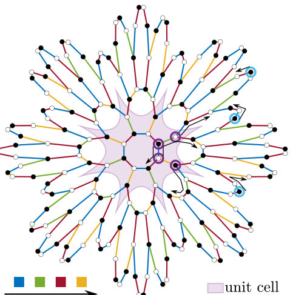
<figcaption class="paper-figure-caption"><b>Fig 1.</b> FIG. 1. Hyperbolic {8, 3} lattice and four-color hopping pro- tocol. The lattice consists of regular octagons with three oc- tagons meeting at each bulk vertex. Black and white vertices denote the two sublattices. The shaded region marks a 16- site fundamental domain of the colored lattice. The lattice edges are divided into four color classes, blue, green, red, and orange. The four-step color cycle blue–green–red–orange is repeated four times and is followed by a sublattice-staggered onsite potential step. Purple-circled vertices mark the four in- equivalent bulk vertex types of the colored lattice, while cyan- circled vertices show representative boundary-propagating sites. Arrows show...</figcaption>
</figure>
<figure class="paper-figure-card">
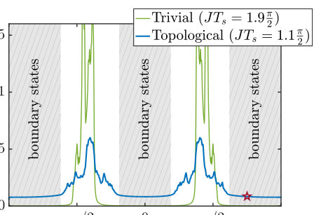
<figcaption class="paper-figure-caption"><b>Fig 2.</b> FIG. 2. Quasienergy density of states of a six-shell open patch with N = 10800 sites. The quasienergy phase εT is defined by UF |ψα⟩= e−iεαT |ψα⟩. The green curve, JTs = 1.9π/2, shows the trivial regime with gaps at εT = 0 and π. The blue curve, JTs = 1.1π/2, shows the topological regime, where both quasienergy gaps, shaded in gray, are populated by boundary states. Both curves use δTs = 0.8π/2. The red star indicates the quasienergy of the in-gap state used for boundary dynamics in Fig. 4.</figcaption>
</figure>
<figure class="paper-figure-card">
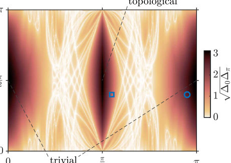
<figcaption class="paper-figure-caption"><b>Fig 3.</b> FIG. 3. Bulk quasienergy gap phase diagram on a 2048-site periodic {8, 3} lattice. The color scale shows the geometric mean ¯∆= √∆0∆π, where ∆0 and ∆π are the quasienergy- phase gaps across εT = 0 and εT = π, respectively. Dark regions indicate that both bulk gaps are resolved in the finite periodic spectrum, while light regions indicate that at least one of the two gaps is numerically small. The blue square and circle correspond to the two open-boundary spectra shown in Fig. 2: the blue square at JTs = 1.1π/2 lies in the anomalous Floquet region, while the blue circle at JTs = 1.9π/2 lies in the trivial region. Both marked points use δTs = 0.8π/2.</figcaption>
</figure>
<figure class="paper-figure-card">
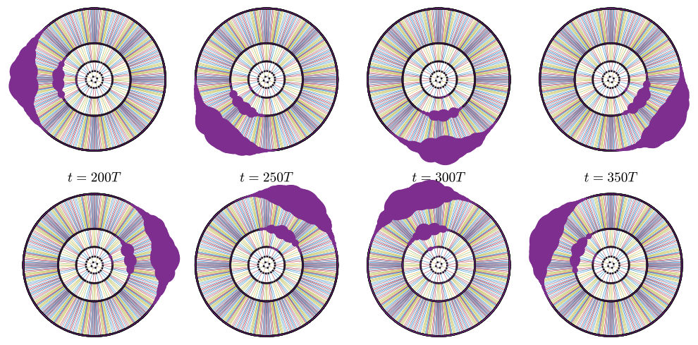
<figcaption class="paper-figure-caption"><b>Fig 4.</b> FIG. 4. Stroboscopic evolution of a boundary wave packet in the anomalous Floquet regime, JTs = 1.1π/2. The system is a five-shell open {8, 3} patch with N = 2888 sites. This is a schematic radial plot where the sites on each shell are plotted on a circle. The initial state is obtained from the in-gap boundary state at the quasienergy marked by the red star in Fig. 2 by applying the angular envelope in Eq. (13). The area of purple disks are proportional to |ψi(t)|2 and are rescaled independently at each time so that the largest marker has a fixed display area; disk sizes should therefore not be compared quantitatively across panels. The panels show t = 0, 50T, 100T, 150T, 200T, 250T, 300T,...</figcaption>
</figure>
<figure class="paper-figure-card">
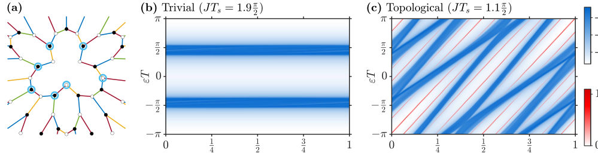
<figcaption class="paper-figure-caption"><b>Fig 5.</b> FIG. 5. Flux dispersion and puncture-boundary spectral flow in compact periodic {8, 3} lattices. (a) Local geometry of the puncture in a 2048-site periodic lattice. A single vertex and its three incident edges are removed, creating a small boundary associated with the three octagons meeting at the deleted vertex. Cyan circles mark the seven puncture-boundary sites that cycle clockwise under one quarter of the hopping schedule at the perfect-hopping point. (b) Hofstadter density of states map in the trivial regime, JTs = 1.9π/2, with δTs = 0.8π/2. The blue background is the logarithmic density of states of the full periodic lattice, while the red overlay shows the puncture-induced excess...</figcaption>
</figure>
</div>

<p><strong>Summary.</strong> The paper develops a theoretical framework to identify an anomalous Floquet topological phase on a hyperbolic lattice using periodic driving. By analyzing quasienergy gaps and tracking wave-packet dynamics, the authors distinguish this anomalous state from trivial ones via the presence of robust chiral boundary modes. This work introduces advanced diagnostic tools suitable for studying topology in curved geometries.</p>
<p><strong>Why it may be interesting.</strong> This work extends topological concepts from standard lattices to negatively curved hyperbolic geometries, providing new tools (like the puncture-based spectral flow) for studying boundary physics in complex systems relevant to photonics or quantum simulation.</p>
<details>
<summary>Detailed structure</summary>
<p><strong>Main problem.</strong> The study constructs and characterizes an anomalous Floquet topological phase on a negatively curved hyperbolic lattice.</p>
<p><strong>Main result.</strong> In the anomalous regime, finite open patches exhibit bulk quasienergy gaps populated by in-gap states, which are diagnosed as chiral boundary modes, distinguishing it from the trivial regime where these gaps remain empty.</p>
<p><strong>Method.</strong> The analysis employs Floquet engineering on a tight-binding Hamiltonian defined on a hyperbolic lattice, utilizing wave-packet dynamics and specialized spectral-flow diagnostics based on punctured periodic lattices.</p>
<p><strong>Model / system.</strong> The system is modeled by a tight-binding Hamiltonian on the $\{8, 3\}$ hyperbolic tessellation, driven periodically (Floquet). The hopping involves a four-color edge-hopping sequence and a sublattice-staggered onsite potential step.</p>
<p><strong>Key observables.</strong> Bulk quasienergy gaps at 0 and $\pi$, in-gap states populated by boundary modes, chiral boundary mode dynamics, and spectral flow diagnostics.</p>
<p><strong>Important parameters / regimes.</strong> The topological regime is defined near the limit where a single hop transfers amplitude completely across an active edge; the trivial regime is near two full hops returning amplitude to the start site.</p>
<p><strong>Assumptions / limitations.</strong> A puncture-based diagnostic is introduced to avoid ambiguities associated with the extensive outer boundary of finite hyperbolic patches, and the analysis uses specific color classes forming perfect matchings.</p>
<p><strong>Figures summary.</strong> Figures illustrate the $\{8, 3\}$ lattice structure and four-color hopping protocol; DOS plots compare open vs. periodic spectra across topological regimes; wave packet dynamics show chiral propagation for boundary states.</p>
<p><strong>Paper structure.</strong> The paper progresses by defining the model on the hyperbolic lattice, characterizing the transition between trivial and anomalous topological phases using quasienergy gaps in finite patches, and finally introducing a robust puncture-based diagnostic tool applicable to other hyperbolic systems.</p>
</details>
<details>
<summary>Abstract</summary>
<p>We construct an anomalous Floquet topological phase on a negatively curved hyperbolic lattice. The model is a tight-binding Hamiltonian with a periodically repeated four-color edge-hopping sequence and a sublattice-staggered onsite potential step. The topological regime is reached near the limit in which a single hopping step transfers amplitude completely across an active edge, while the trivial regime is reached near the point where two full hops occur along an active edge during a single hopping step, returning the amplitude to its starting site. In finite open patches, the topological regime is characterized by bulk quasienergy gaps at $0$ and $π$ that are populated by in-gap states, in contrast to a trivial regime where these gaps remain empty. Using compact periodic lattices, we map the bulk $0$ and $π$ quasienergy gaps and identify the gapped regions connected to the trivial and anomalous open-boundary spectra. We diagnose the in-gap states as chiral boundary modes by their real-space dynamics. Finally, we introduce a small-boundary spectral-flow diagnostic based on punctured periodic hyperbolic lattices, which avoids the ambiguity associated with the extensive outer boundary of finite hyperbolic patches. This puncture-based diagnostic should be useful for studying other topological hyperbolic systems.</p>
</details>
<p><sub><a href="#top">↑ back to top</a></sub></p>

<p><a id="paper-2607.28795"></a></p>
<h3 id="high-rate-qldpc-processors">⭐ <a href="http://arxiv.org/abs/2607.28795v1">High-rate qLDPC processors</a></h3>
<p><strong>Highlighted author(s):</strong> John Preskill<br>
<strong>Authors:</strong> Aditya Bhardwaj, Muzhou Ma, Nadine Meister, Robbie King, Dolev Bluvstein, John Preskill, Madelyn Cain, Qian Xu, Hsin-Yuan Huang<br>
<strong>Type:</strong> theory · <strong>Category:</strong> quantum information and computing · <strong>PDF:</strong> <a href="https://arxiv.org/pdf/2607.28795v1">https://arxiv.org/pdf/2607.28795v1</a><br>
<strong>Analysis basis:</strong> full PDF text, analyzed in chunks
<strong>Topic relevance:</strong> <code>QC/QI experiment</code> <strong>2/5</strong></p>
<div class="figure-strip-hint">↔ Scroll figures horizontally</div>
<div class="paper-figures-scroll">
<figure class="paper-figure-card">
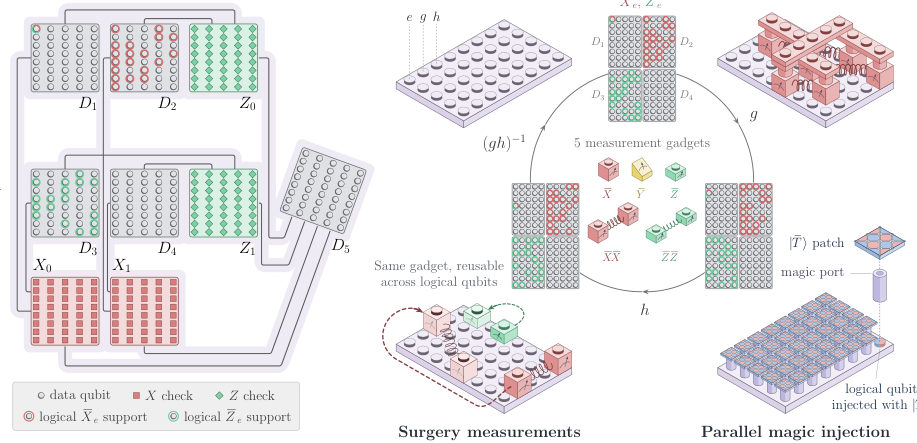
<figcaption class="paper-figure-caption"><b>Fig 1.</b> Figure 1: Mitten codes as fault-tolerant qLDPC processors (a) The J200, 40, 12K mitten code built from the lifted product of base matrices 𝐴and 𝐵defined over the group algebra 𝐹2[𝐺] of the non-abelian group 𝐺= 𝐶4 × 𝐷10. The code consists of five blocks 𝐷1, . . . , 𝐷5 of |𝐺| = 40 physical data qubits and two blocks each of 𝑋-check and 𝑍-check ancilla qubits. Grey lines show the block-wise connectivity, while the connectivity between individual qubits is determined by the group structure through the ring entries of the base matrices 𝐴and 𝐵. Data qubits highlighted in red (green) mark the support of the canonical logical ¯𝑋𝑒( ¯𝑍𝑒) operator of weight 20 (18), where 𝑒is the identity element of...</figcaption>
</figure>
<figure class="paper-figure-card">
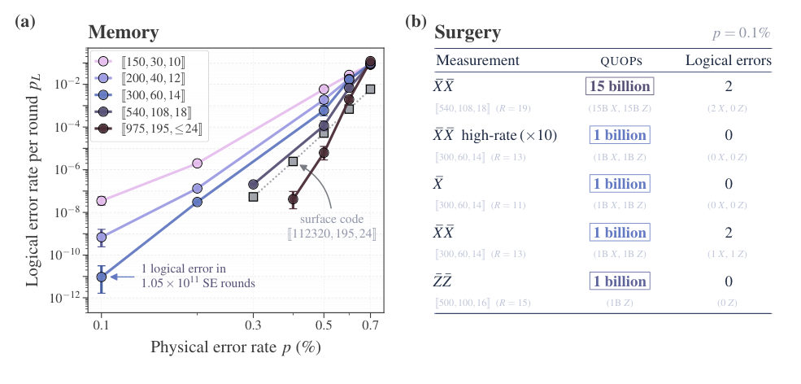
<figcaption class="paper-figure-caption"><b>Fig 2.</b> Figure 2: Performance of mitten codes as qLDPC processors using our telescoping decoder. All simulations are performed under circuit-level noise with uniform depolarizing noise of strength 𝑝applied to state preparation, two-qubit gates, and measurements, with no idling noise. (a) Memory performance of mitten codes. We plot the logical error rate per syndrome extraction round averaged over an equal number of 𝑋and 𝑍basis experiments where error bars represent 68.27% Clopper-Pearson confidence intervals; the mitten codes form a family consistent with a threshold of 𝑝𝑐≈0.7%. Remarkably, at 𝑝= 0.4%, the J975, 195, ≤24K mitten code outperforms the J112320, 195, 24K stack of rotated surface codes...</figcaption>
</figure>
<figure class="paper-figure-card">
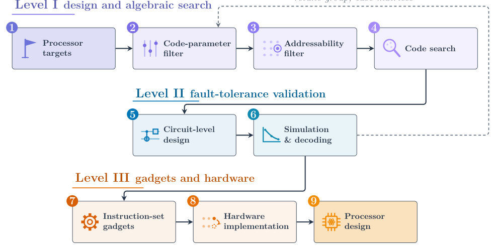
<figcaption class="paper-figure-caption"><b>Fig 3.</b> Figure 3: High-rate qLDPC processor discovery pipeline. Starting from the processor targets of Definition 3, the pipeline narrows the design space in three levels. The first level explores the space of groups and base matrices: theoretical distance bounds (Appendix G) first constrain the search space, and the fast code- distance estimator sQetch (Appendix H) then brute-force searches the remaining space to find codes with good parameters and addressable logical operations. The second level searches for fault-tolerant syndrome extraction schedules and verifies logical performance through circuit-level simulations decoded with our telescoping decoder (Appendix I). The third level constructs...</figcaption>
</figure>
<figure class="paper-figure-card">
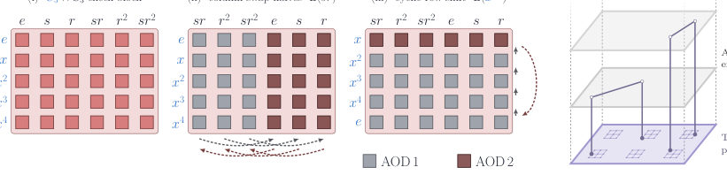
<figcaption class="paper-figure-caption"><b>Fig 4.</b> Figure 4: Hardware implementation. (a) In neutral atom hardware, each gate layer of syndrome extraction is implemented by entangling blocks of checks with corresponding blocks of data qubits, and permuting check qubits between layers. Here we show an example 𝑋-check qubit permutation for the J150, 30, 10K code (𝐺= 𝐶5 × 𝑆3), for which the check qubit permutations between layers 𝐿(𝑟2) and 𝐿(𝑥· 𝑠𝑟2) correspond to the group action 𝐿(𝑥−1 · 𝑠𝑟). (b) Mitten codes can also be implemented in multilayer superconducting hardware by placing a large planar subgraph on the first tier, then routing all remaining edges that cannot be placed on the first tier through higher tiers.</figcaption>
</figure>
<figure class="paper-figure-card">
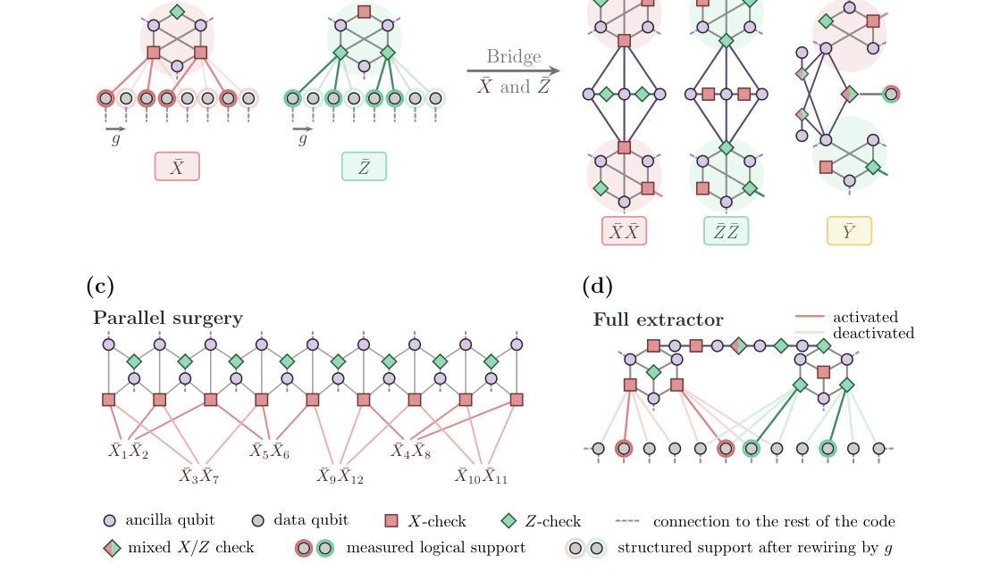
<figcaption class="paper-figure-caption"><b>Fig 5.</b> Figure 5: Surgery gadgets. (a) The seed graph surgery gadgets for measuring logical ¯𝑋/ ¯𝑍operators constructed based on the group-structured canonical logical basis (Appendix B) where different logical operators are related by group action 𝑔and the seed gadgets can be used to measure all |𝐺| of them within an orbit by rewiring. (b) ¯𝑋¯𝑋, ¯𝑍¯𝑍and ¯𝑌graph surgery gadgets constructed by bridging the seed gadgets from (a). Together, the graph surgery gadgets in (a) and (b) can generate the entire Clifford group. (c) Parallel surgery gadget for measuring Pauli products in parallel. (d) Full extractor for measuring arbitrary weight Pauli product operators using a fixed gadget.</figcaption>
</figure>
</div>

<p><strong>Summary.</strong> The paper introduces 'mitten codes,' a novel class of qLDPC codes derived from non-abelian groups, to address the major hurdles in building scalable quantum processors. By demonstrating high performance metrics—such as achieving $10^{-11}$ logical error rates with manageable physical qubits—and by developing automated design pipelines for hardware mapping, they propose a practical path toward fault-tolerant quantum computation on near-term platforms.</p>
<p><strong>Why it may be interesting.</strong> This work provides concrete, quantifiable metrics for assessing fault tolerance beyond simple error correction thresholds by integrating code theory with practical constraints like circuit depth and physical routing overhead.</p>
<details>
<summary>Detailed structure</summary>
<p><strong>Main problem.</strong> The primary challenge is designing quantum low-density parity-check (qLDPC) processors that are simultaneously high-rate, high-throughput, hardware-friendly, and fast to decode for fault-tolerant computation.</p>
<p><strong>Main result.</strong> The authors introduce 'mitten codes,' a family of qLDPC codes based on non-abelian groups, which overcome distance limitations of abelian codes and demonstrate achieving logical error rates as low as $10^{-11}$ at achievable physical error rates.</p>
<p><strong>Method.</strong> They developed an end-to-end design pipeline using sQetch to discover these codes, proving their feasibility through rigorous simulation of syndrome extraction and hardware placement optimization (Spectral Placement).</p>
<p><strong>Model / system.</strong> The work focuses on abstract qLDPC processor models implemented via 'mitten codes,' which are lifted product codes over non-abelian groups. The physical realization is mapped onto near-term neutral atom arrays and superconducting qubit architectures.</p>
<p><strong>Key observables.</strong> Block logical error rate ($\sim 10^{-11}$), processing capacity, throughput (logical operations per cycle), and hardware complexity metrics like Tiers, Length, and TSVs.</p>
<p><strong>Important parameters / regimes.</strong> Encoding rate of $20\%$, check weight of 9, physical error rate (PER) up to $0.4\%$, and sub-millisecond decoding latency.</p>
<p><strong>Assumptions / limitations.</strong> The analysis assumes that the non-abelian structure is key to bypassing distance bounds; hardware feasibility relies on mapping complex graph structures onto discrete superconducting or neutral atom lattices.</p>
<p><strong>Figures summary.</strong> Figures illustrate the code structure, the three-level discovery pipeline (sQetch), and detailed comparisons of hardware complexities (Tiers, Length) for various codes using placement algorithms.</p>
<p><strong>Paper structure.</strong> The paper progresses from identifying the general challenge to introducing mitten codes as a solution. It details the theoretical advantages of non-abelian groups, presents performance benchmarks (error rates/throughput), and concludes with detailed analyses on hardware mapping complexity (thickness and physical layout optimization).</p>
</details>
<details>
<summary>Abstract</summary>
<p>Despite significant progress on quantum low-density parity-check (qLDPC) codes, building qLDPC processors that are high-rate, high-throughput, hardware-friendly, and fast-to-decode remains a challenge. We introduce mitten codes, a family of qLDPC processor codes of encoding rate $20\%$ and check weight $9$, based on non-abelian groups. Their non-abelian structure evades distance bounds constraining abelian counterparts, allowing mitten codes to reach distance $18$ and beyond with just a few hundred data qubits. The logical operators of a mitten code are related by the group action, yielding a modular, low-overhead logical toolkit: full Clifford operations follow from bridging two reusable seed surgery gadgets or from a single fixed extractor. Furthermore, qLDPC processors based on mitten codes support high-rate surgery that executes many logical measurements in parallel, and parallel magic-state injection into all logical qubits at once. Under circuit-level noise, with our fast decoder, the $[\![300,60,14]\!]$ mitten code achieves, without extrapolation, a block logical error rate of ${\sim}10^{-11}$ per round at $0.1\%$ physical error rate (PER), while the $[\![ 975,195,\leq 24 ]\!]$ code reaches ${\sim}10^{-8}$ at $0.4\%$ PER. Decoding $15$ billion surgery experiments on the $[\![540,108,18]\!]$ code at $0.1\%$ PER, we observe only two logical failures, demonstrating a qLDPC processor capable of running ${\sim}10^{10}$ logical operations. Our decoder is compatible with sub-millisecond average latency per logical cycle, sufficient for real-time decoding on neutral atom hardware. Discovered by an end-to-end design pipeline built on sQetch, a distance estimator orders of magnitude faster than existing tools, and mapping efficiently onto near-term neutral atom and superconducting hardware, mitten codes open a practical path toward fault-tolerant quantum computation.</p>
</details>
<p><sub><a href="#top">↑ back to top</a></sub></p>

<p><a id="paper-2607.28964"></a></p>
<h3 id="parent-hamiltonian-and-intrinsic-phase-transition-in-non-hermitian-photonic-systems"><a href="http://arxiv.org/abs/2607.28964v1">Parent Hamiltonian and intrinsic phase transition in non-Hermitian photonic systems</a></h3>
<p><strong>Authors:</strong> Yuntao Xiao, Yuchen Guo, Xiaojian Huang, Huixia Gao, Dengke Qu, Lei Xiao, Kunkun Wang, Shuo Yang, Peng Xue<br>
<strong>Type:</strong> experiment · <strong>Category:</strong> statistical mechanics · <strong>PDF:</strong> <a href="https://arxiv.org/pdf/2607.28964v1">https://arxiv.org/pdf/2607.28964v1</a><br>
<strong>Analysis basis:</strong> full PDF text, analyzed in chunks
<strong>Topic relevance:</strong> 🔥 <code>quantum optics experiment</code> <strong>5/5</strong> · 🔥 <code>analog quantum simulation</code> <strong>4/5</strong> · 🔥 <code>driven-dissipative phase transition</code> <strong>4/5</strong> · 🔥 <code>methods for driven-dissipative</code> <strong>4/5</strong> · <code>correlated / nonlocal dissipation</code> <strong>3/5</strong> · <code>exotic spin models in light-matter</code> <strong>3/5</strong> · <code>non-equilibrium universality</code> <strong>3/5</strong> · <code>Kondo &amp; dissipative impurity</code> <strong>2/5</strong> · <code>QC/QI experiment</code> <strong>2/5</strong> · <code>non-equilibrium dynamics</code> <strong>2/5</strong> · <code>Keldysh / 2PI / non-Gaussian methods</code> <strong>1/5</strong> · <code>correlated cavity matter</code> <strong>1/5</strong> · <code>entanglement &amp; information structure</code> <strong>1/5</strong> · <code>spintronics-quantum-optics interface</code> <strong>1/5</strong></p>
<div class="figure-strip-hint">↔ Scroll figures horizontally</div>
<div class="paper-figures-scroll">
<figure class="paper-figure-card">
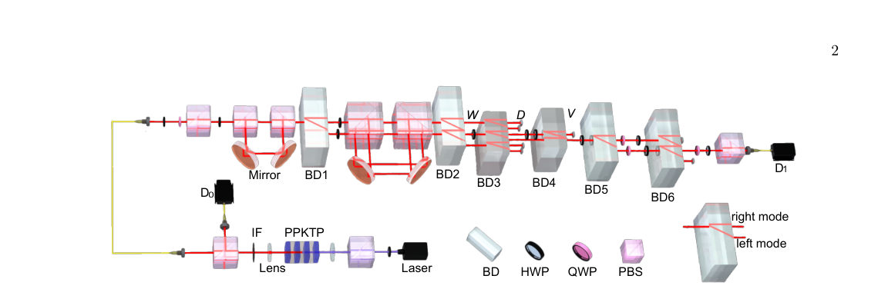
<figcaption class="paper-figure-caption"><b>Fig 1.</b> FIG. 1. Experimental setup. A heralded single photon is created via type-II spontaneous parametric down-conversion via a periodically poled potassium titanyl phosphate crystal (PPKTP). In the state space spanned by the polarization modes |h⟩, |v⟩ and the spatial modes |r⟩, |l⟩, the signal photon is prepared in a maximally mixed state using two unbalanced interferometer setups composed of four polarizing beam splitters (PBSs), three half-wave plates (HWPs), and a beam displacer (BD1). We purify this mixed state into the ground states of the NH-PH via four BDs (BD2–BD5) and HWPs. The resulting ground states are reconstructed via quantum state tomography performed with BD6, a PBS, three...</figcaption>
</figure>
<figure class="paper-figure-card">
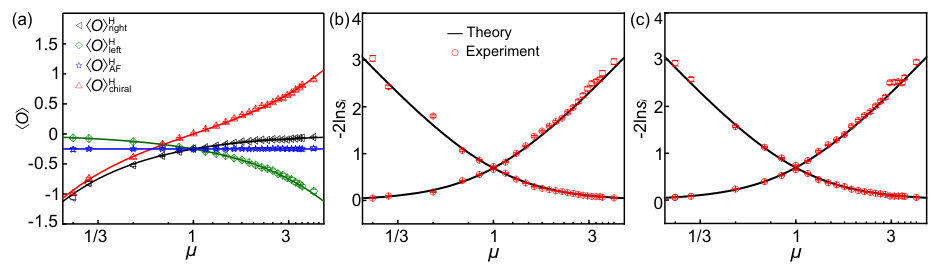
<figcaption class="paper-figure-caption"><b>Fig 2.</b> FIG. 2. (a) The expectation values of order parameters ⟨O⟩= ⟨L|O|R⟩/⟨L|R⟩for NH-PH H with N = 2. Here, ⟨OH⟩refers to the results extracted from the reconstructed |Ψs R⟩and |Ψs L⟩after the imaginary-time evolution. The entanglement spectrum of (b) |Ψs R⟩and (c) |Ψs L⟩obtained from state tomography. Experimental data are represented by dots, and theoretical results are denoted by continuous lines. Error bars indicate the statistical uncertainty, which is obtained based on assuming Poissonian statistics.</figcaption>
</figure>
<figure class="paper-figure-card">
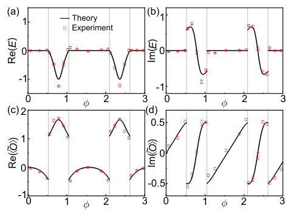
<figcaption class="paper-figure-caption"><b>Fig 3.</b> FIG. 3. Real (a) and imaginary (b) parts of the ground-state energy of NH-PH ˜H (N = 3). The real parts of eigenval- ues are negative in π/6 &lt; ϕ &lt; π/3 and 2π/3 &lt; ϕ &lt; 5π/6. Real (c) and imaginary (d) parts of the expectation value of order parameter ⟨˜O⟩= ⟨Ψs ˜L| ˜O|Ψs ˜ R⟩/⟨Ψs ˜L|Ψs ˜ R⟩. Experimental data (dots) are obtained from states obtained via imaginary- time evolution, while theoretical results (solid black lines) are obtained from ground states calculated via exact diagonal- ization of the constructed NH-PH. Error bars indicate the statistical uncertainty, which are obtained by assuming Pois- sonian statistics.</figcaption>
</figure>
<figure class="paper-figure-card">
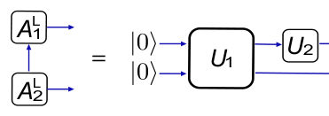
<figcaption class="paper-figure-caption"><b>Fig 4.</b> FIG. 4. (a) The mapping from MPSs tensors to unitary op- erations. Here, U1 and U2 are unitary operations defined in Eq. (9). (b-c) The quantum circuits mapped from the MPSs to generate |R⟩and |L⟩.</figcaption>
</figure>
<figure class="paper-figure-card">
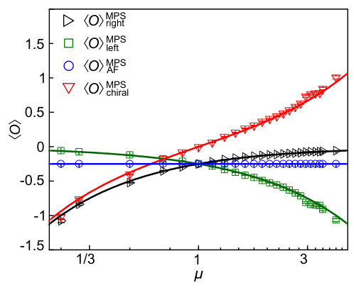
<figcaption class="paper-figure-caption"><b>Fig 5.</b> FIG. 5. The expectation values of order parameters ⟨O⟩= ⟨L|O|R⟩/⟨L|R⟩for NH-PH H with N = 2. ⟨OMPS⟩denotes the results from direct measurements in the quantum circuits.</figcaption>
</figure>
</div>

<p><strong>Summary.</strong> The study reports the first experimental generation and characterization of non-Hermitian Parent Hamiltonians using single photons. By mapping MPS states onto photonic circuits, the researchers successfully measured signatures of intrinsic non-Hermitian physics, including a distinct phase transition observed when zero-energy modes cease to be globally stable.</p>
<p><strong>Why it may be interesting.</strong> This work provides a concrete, physical realization of complex theoretical concepts (NH Hamiltonians) using quantum optics, which is highly relevant for experimental AMO physicists working on open or engineered quantum systems.</p>
<details>
<summary>Detailed structure</summary>
<p><strong>Main problem.</strong> The goal is to experimentally realize and characterize non-Hermitian Hamiltonians (NH-PHs) with controllable properties, moving beyond simple perturbations of Hermitian models.</p>
<p><strong>Main result.</strong> The authors successfully demonstrated the first experimental generation of NH-PHs using single photons and observed an intrinsic non-Hermitian phase transition in a larger system model.</p>
<p><strong>Method.</strong> They construct the Hamiltonian from pairs of Matrix Product States (MPSs) via imaginary-time evolution on photonic systems, validating results by measuring multiple order parameters.</p>
<p><strong>Model / system.</strong> The work uses single photons as an experimental platform to simulate non-Hermitian spin chains. The framework is built upon constructing a Non-Hermitian Parent Hamiltonian (NH-PH) from asymmetric MPSs, such as those derived from AKLT states.</p>
<p><strong>Key observables.</strong> Four order parameters probing non-reciprocal correlations, chiral imbalance, and conventional antiferromagnetic correlations; ground state energy and expectation values of these order parameters.</p>
<p><strong>Important parameters / regimes.</strong> The asymmetry parameter ($\mu$), which controls the deviation from the Hermitian limit ($\mu=1$); system size ($N$).</p>
<p><strong>Assumptions / limitations.</strong> The method relies on imaginary-time evolution to project the state onto the desired ground states, and that this process can be mapped to passive photon loss operations.</p>
<p><strong>Figures summary.</strong> Figure 2 compares measured order parameters against theory for $N=2$; Figure 5 shows direct MPS measurements agreeing with theoretical predictions; the text describes observing abrupt jumps in order parameters signaling phase transitions.</p>
<p><strong>Paper structure.</strong> The paper first introduces the NH-PH concept and its construction from MPSs. It details the experimental setup using single photons to generate and purify ground states via imaginary-time evolution. Finally, it characterizes the system by measuring various order parameters and observing an intrinsic non-Hermitian phase transition in larger systems.</p>
</details>
<details>
<summary>Abstract</summary>
<p>Non-Hermitian systems host phenomena absent in Hermitian physics, but realizing Hamiltonians with intrinsic non-Hermitian properties remains challenging. The theoretical method of non-Hermitian parent Hamiltonian (NH-PH) enables the construction of a non-Hermitian system from a pair of matrix product states (MPSs) with tailored properties. Here, we report the first experimental generation of NH-PHs. This generation starts from MPSs that represent asymmetric Affleck--Kennedy--Lieb--Tasaki (AKLT) states. The construction is validated with single photons via imaginary-time evolution of the generated NH-PH to obtain its left and right ground states. We then characterize the properties of the system by measuring four different order parameters that probe non-reciprocal correlations, chiral imbalance, and conventional antiferromagnetic correlations. Furthermore, extending the framework to a larger system with a different model, we observe an intrinsic non-Hermitian phase transition, manifested by abrupt jumps of an order parameter when the designated zero-energy modes cease to be the globally lowest-energy states. Our work provides the first experimental realization and characterization of non-Hermitian Hamiltonians with controllable and customizable properties, opening new avenues for exploring intrinsic non-Hermitian phenomena across diverse physical platforms.</p>
</details>
<p><sub><a href="#top">↑ back to top</a></sub></p>

<p><a id="paper-2607.28730"></a></p>
<h3 id="quantum-resources-in-disorder-free-localization-dynamics-of-gauge-theories"><a href="http://arxiv.org/abs/2607.28730v1">Quantum Resources in Disorder-Free Localization Dynamics of Gauge Theories</a></h3>
<p><strong>Authors:</strong> Devendra Singh Bhakuni, Giovanni Cataldi, Jad C. Halimeh, Emanuele Tirrito<br>
<strong>Type:</strong> theory · <strong>Category:</strong> disordered systems and neural networks · <strong>PDF:</strong> <a href="https://arxiv.org/pdf/2607.28730v1">https://arxiv.org/pdf/2607.28730v1</a><br>
<strong>Analysis basis:</strong> full PDF text, analyzed in chunks
<strong>Topic relevance:</strong> 🔥 <code>entanglement &amp; information structure</code> <strong>5/5</strong> · 🔥 <code>analog quantum simulation</code> <strong>4/5</strong> · <code>non-equilibrium dynamics</code> <strong>3/5</strong> · <code>scars &amp; prethermalization</code> <strong>3/5</strong> · <code>non-equilibrium universality</code> <strong>2/5</strong> · <code>Keldysh / 2PI / non-Gaussian methods</code> <strong>1/5</strong> · <code>correlated / nonlocal dissipation</code> <strong>1/5</strong> · <code>driven-dissipative phase transition</code> <strong>1/5</strong> · <code>methods for driven-dissipative</code> <strong>1/5</strong></p>
<div class="figure-strip-hint">↔ Scroll figures horizontally</div>
<div class="paper-figures-scroll">
<figure class="paper-figure-card">
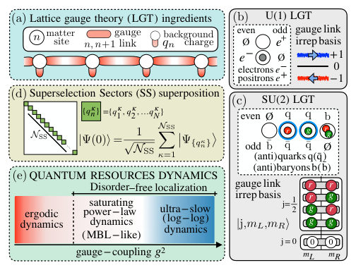
<figcaption class="paper-figure-caption"><b>Fig 1.</b> FIG. 1. Disorder-free localization dynamics of quan- tum resources in 1+1D LGTs. (a) LGT ingredients: dy- namical matter on sites n, gauge fields on links (n, n+1), and static background charges qn. (b,c) Local bases of the U(1) and SU(2) LGTs, with staggered fermionic matter and gauge links. (d) The initial states in Eq. (9) are equal-weight su- perpositions of NSS superselection sectors, so the dynamics in Eq. (10) averages over sectors and experiences effective disorder. (e) Resulting resource dynamics vs. gauge cou- pling g2: ergodic growth at weak coupling, MBL-like satu- rating power-law relaxation at intermediate g2, and ultraslow double-logarithmic dynamics at the largest g2.</figcaption>
</figure>
<figure class="paper-figure-card">
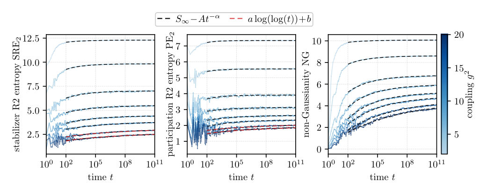
<figcaption class="paper-figure-caption"><b>Fig 2.</b> FIG. 2. Time evolution of quantum resources in the U(1) LGT. From left to right, the stabilizer Rényi-2 entropy (SRE2), the participation Rényi-2 entropy (PE2), and the fermionic non-Gaussianity (NG) as functions of time for vanishing mass m = 0 (as in [92]) and increasing electric coupling g2 ∈[2, 20] (light to dark blue) at L = 16. Data and fit curves are displayed up to t = 1011, whereas the fit parameters are determined on the full window 102 ≤t ≤1015 (see SM [110]). Dashed black lines denote the saturating power law X∞−At−α, selected by the statistical analysis at intermediate couplings for SRE2 and PE2 and at every coupling for NG. Dashed red lines denote the double-logarithmic law a...</figcaption>
</figure>
<figure class="paper-figure-card">
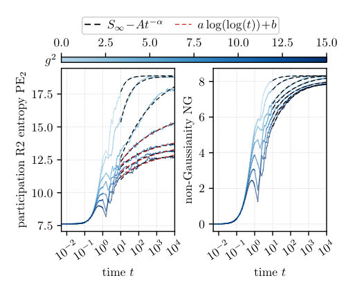
<figcaption class="paper-figure-caption"><b>Fig 3.</b> FIG. 3. Time evolution of quantum resources in the SU(2) LGT. The participation Rényi-2 entropy (PE2, left) and the fermionic non-Gaussianity (NG, right) as functions of time for increasing coupling g2 ∈[0.5, 15] (shades of blue) at L = 12. After the initial transient, each trace is com- pared with the growth law selected by the statistical analy- sis (see SM): the saturating power law X∞−At−α (dashed black) or, for PE2 at strong coupling, the double-logarithmic law a log log t+b (dashed red). For numerical convenience, simulations are performed after rescaling the Hamiltonian in Eq. (7) as ( ˆH, m, g2)→4 √</figcaption>
</figure>
<figure class="paper-figure-card">
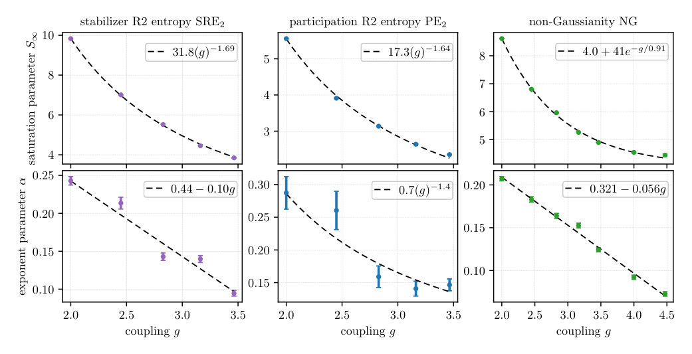
<figcaption class="paper-figure-caption"><b>Fig 4.</b> FIG. 4. Scaling of the saturating-power-law parameters in the U(1) LGT. Saturation values X∞(top row) and relaxation exponents α (bottom row) of the saturating power law X∞−At−α [Eq. (S11a)] for SRE2, PE2, and NG (left to right), plotted as functions of the gauge coupling g = p</figcaption>
</figure>
<figure class="paper-figure-card">
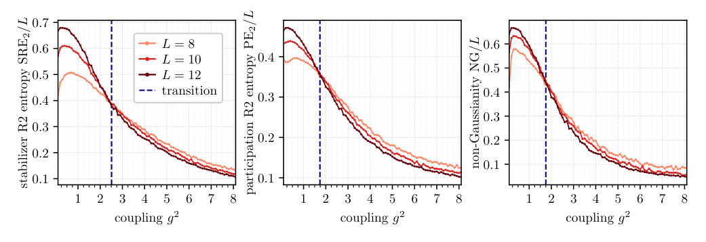
<figcaption class="paper-figure-caption"><b>Fig 5.</b> FIG. 5. Finite-size scaling of static quantum resources in the U(1) LGT. From left to right, the densities of stabilizer Rényi-2 entropy (SRE2/L), participation Rényi-2 entropy (PE2/L), and fermionic non-Gaussianity (NG/L) as functions of the gauge coupling g2 for different lattice sizes L = 8, 10, 12 (increasing color intensity). The vertical dashed line marks the finite- size crossing point, separating the weak-coupling regime, where the densities grow with L, from the strong-coupling regime, where they decrease with L. In all cases, we averaged over 350 background super-selection sectors.</figcaption>
</figure>
</div>

<p><strong>Summary.</strong> This paper analyzes the real-time evolution of quantum complexity resources in 1+1D Lattice Gauge Theories under disorder-free localization. By tracking metrics like Rényi entropies, the authors characterize two distinct dynamic regimes based on the gauge coupling strength: MBL-like power-law saturation and ultraslow double-logarithmic growth. The findings highlight how fundamental symmetries constrain quantum information spreading in these strongly correlated systems.</p>
<p><strong>Why it may be interesting.</strong> This work directly addresses localization phenomena (MBL) within a complex physical framework (gauge theories), providing quantitative measures of how fundamental symmetries constrain quantum information flow, which is highly relevant for understanding dynamics in strongly interacting many-body systems.</p>
<details>
<summary>Detailed structure</summary>
<p><strong>Main problem.</strong> The study investigates how quantum resources spread in lattice gauge theories (LGTs) operating in a disorder-free localization (DFL) regime, focusing on the real-time dynamics of quantum complexity.</p>
<p><strong>Main result.</strong> The research finds two distinct behaviors depending on the gauge coupling: power-law relaxation consistent with Many-Body Localization at intermediate couplings, and ultraslow double-logarithmic growth at large couplings.</p>
<p><strong>Method.</strong> The authors employ multiple quantum resource monotones—Stabilizer Rényi Entropy, Participation Rényi Entropy, and Fermionic Non-Gaussianity—to diagnose complexity dynamics over long time scales.</p>
<p><strong>Model / system.</strong> The models are 1+1 dimensional Abelian U(1) and non-Abelian SU(2) Lattice Gauge Theories (LGTs), formulated using Kogut-Susskind staggered fermions on a lattice chain. The analysis tracks the evolution governed by gauge constraints.</p>
<p><strong>Key observables.</strong> Stabilizer Rényi Entropy ($    ext{SRE}_2$), Participation Rényi Entropy ($    ext{PE}_2$), and Fermionic Non-Gaussianity ($ ext{NG}$)</p>
<p><strong>Important parameters / regimes.</strong> Gauge coupling strength ($g^2$), Time ($t$, up to $10^{15}$), Lattice size ($L$)</p>
<p><strong>Assumptions / limitations.</strong> The analysis relies on the assumption that gauge invariance constrains quantum resource growth, and later sections use exact counting methods to distinguish polynomial vs. exponential scaling of resonant volumes.</p>
<p><strong>Figures summary.</strong> Figures illustrate LGT ingredients and show schematic summaries of resource dynamics versus $g^2$, displaying power-law saturation at intermediate couplings and double-logarithmic behavior at large couplings for U(1) LGTs.</p>
<p><strong>Paper structure.</strong> The paper introduces the problem by defining quantum complexity diagnostics in LGTs. It then analyzes the time evolution using specific resource monotones across different coupling regimes, culminating in rigorous mathematical bounds derived from exact counting of resonant configurations to confirm the double-logarithmic growth rate.</p>
</details>
<details>
<summary>Abstract</summary>
<p>Quantum-state complexity diagnostics provide valuable insight into many-body dynamics, information scrambling, and quantum computation. Here, we investigate the real-time dynamics of quantum complexity in $1+1$-dimensional Abelian U(1) and non-Abelian SU(2) lattice gauge theories (LGTs), focusing on the disorder-free localization (DFL) regime. Using stabilizer Rényi entropy, participation Rényi entropy, and fermionic non-Gaussianity as measures of complexity, we observe, for both theories, two main behaviors as a function of the gauge coupling: at intermediate values, a power-law relaxation towards saturation, consistent with observations in many-body localization, and, at sufficiently large values, an ultraslow double-logarithmic growth, which we substantiate with a configuration-space bound verified by exact counting. Our results not only provide deeper insight into the dynamics of DFL but also highlight the role of gauge invariance in constraining quantum resources and are relevant to recent quantum simulations of LGTs.</p>
</details>
<p><sub><a href="#top">↑ back to top</a></sub></p>

<p><a id="paper-2607.29501"></a></p>
<h3 id="delayed-formation-of-landau-polaritons-in-phase-resolved-thz-spectroscopy"><a href="http://arxiv.org/abs/2607.29501v1">Delayed Formation of Landau Polaritons in Phase-Resolved THz Spectroscopy</a></h3>
<p><strong>Authors:</strong> Noureddine Charrouj, Yurii Ivonyak, Dmitriy Yavorskiy, Vladimir Y. Umansky, Jerzy Lusakowski, Wojciech Knap, Marcin Bialek<br>
<strong>Type:</strong> experiment · <strong>Category:</strong> other · <strong>PDF:</strong> <a href="https://arxiv.org/pdf/2607.29501v1">https://arxiv.org/pdf/2607.29501v1</a><br>
<strong>Analysis basis:</strong> full PDF text, analyzed in chunks
<strong>Topic relevance:</strong> 🔥 <code>quantum optics experiment</code> <strong>4/5</strong> · <code>analog quantum simulation</code> <strong>3/5</strong> · <code>correlated cavity matter</code> <strong>3/5</strong> · <code>spintronics-quantum-optics interface</code> <strong>3/5</strong> · <code>Tavis-Cummings &amp; cavity-many-emitter</code> <strong>2/5</strong> · <code>driven-dissipative phase transition</code> <strong>2/5</strong> · <code>methods for driven-dissipative</code> <strong>2/5</strong> · <code>non-equilibrium dynamics</code> <strong>2/5</strong> · <code>correlated / nonlocal dissipation</code> <strong>1/5</strong> · <code>entanglement &amp; information structure</code> <strong>1/5</strong> · <code>exotic spin models in light-matter</code> <strong>1/5</strong> · <code>interference shaping light</code> <strong>1/5</strong> · <code>non-equilibrium universality</code> <strong>1/5</strong></p>
<div class="figure-strip-hint">↔ Scroll figures horizontally</div>
<div class="paper-figures-scroll">
<figure class="paper-figure-card">
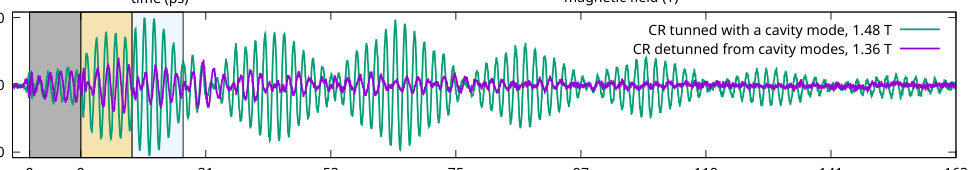
<figcaption class="paper-figure-caption"><b>Fig 1.</b> FIG. 1. Sample with thick substrate. In the segments (a), (b), and (d), the time scale is the same; the gray, yellow, and blue areas represent time spans following three subsequent THz pulse echoes. (a) Time-domain trace of co-polarized reflection Rx at B = 1.48 T. In the schematic below, the red arrows symbolize the propagation of THz pulses in the slab (the green rectangle). Multiple internal reflections produce a train of pulses, as visible in the time-domain trace. (b) Time-domain traces of cross-polarized reflection Ry at B = 0 T, and at B = ±1.48 T. (c) Experimental Faraday rotation angle θF as a function of magnetic field. Arrows and dashed lines mark the magnetic fields of the...</figcaption>
</figure>
<figure class="paper-figure-card">
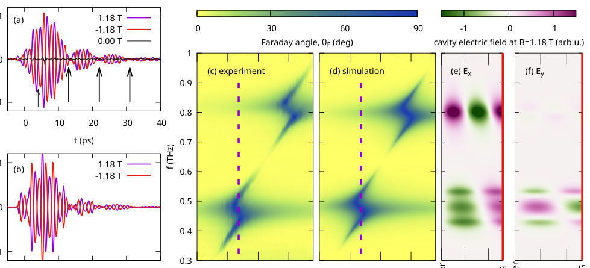
<figcaption class="paper-figure-caption"><b>Fig 2.</b> FIG. 2. Thin-substrate sample in cross-polarized measurements. (a) Time-domain traces of reflection spectra at B = 0 T and at B = ±1.18 T. Larger black arrows in the yellow segment mark observed nodes of Rabi oscillations beating, while the small black arrow in the green segment marks an expected first node. (b) Simulated time-domain traces at B = 1.18 T. (c) Faraday angle spectra θF as a function of magnetic field. Dashed line marks the spectrum at B = 1.18 T. (d) Simulation of the Faraday angle using the transfer-matrix method. (e) Simulation of cavity mode electric field perpendicular to the incident field at B = 1.18 T.</figcaption>
</figure>
</div>

<p><strong>Summary.</strong> The researchers used phase-resolved THz spectroscopy to study Landau polaritons formed by coupling cyclotron resonance in a 2DEG to a cavity. They found that the characteristic Rabi oscillations do not appear instantly upon excitation but are delayed until one full cavity round-trip time has elapsed. This result offers crucial dynamic insight, demonstrating that strong coupling is a process built up over time rather than an instantaneous effect.</p>
<p><strong>Why it may be interesting.</strong> This work provides direct experimental evidence of the <em>dynamics</em> of strong light-matter coupling, moving beyond static spectral measurements. The observation of a build-up time scale is crucial for understanding open quantum systems where field buildup dictates coherence.</p>
<details>
<summary>Detailed structure</summary>
<p><strong>Main problem.</strong> The study investigates the dynamic formation and coherent energy exchange within Landau polaritons formed by strong light-matter coupling.</p>
<p><strong>Main result.</strong> The Rabi oscillations of these polaritons are observed to be delayed, commencing only after a time delay corresponding to one cavity round-trip time. This proves that the strong-coupling regime is dynamically established through the evolution of the cavity field.</p>
<p><strong>Method.</strong> Phase-resolved terahertz time-domain spectroscopy (THz-TDS) was employed, utilizing cross-polarized and magnetic-field differential measurements to resolve temporal beating.</p>
<p><strong>Model / system.</strong> The system involves coupling between the cyclotron resonance in a GaAs/Al0.36Ga0.64As two-dimensional electron gas (2DEG) and confined Fabry-Perot cavity modes, forming Landau polaritons.</p>
<p><strong>Key observables.</strong> Rabi oscillations (time beating), Faraday rotation angle spectra ($    heta_F$), and time-domain reflection signals ($R_x$, $R_y$).</p>
<p><strong>Important parameters / regimes.</strong> Cavity period ($\sim 9$ ps for thick substrate); Rabi oscillation periods (e.g., $22$ ps observed).</p>
<p><strong>Assumptions / limitations.</strong> The analysis relies on phase-sensitive THz measurements to resolve dynamics beyond simple envelope measurements.</p>
<p><strong>Figures summary.</strong> Figures show time-domain traces of cross-polarized signals ($R_y$) exhibiting beating, and Faraday angle spectra ($   heta_F$ vs $B$) displaying zigzag patterns characteristic of strong coupling.</p>
<p><strong>Paper structure.</strong> The paper progresses by first establishing the physical system (2DEG coupled to a cavity), then using time-domain spectroscopy to observe Rabi oscillations, culminating in the key finding that these oscillations exhibit a measurable onset delay linked to the cavity round-trip time.</p>
</details>
<details>
<summary>Abstract</summary>
<p>Strong light-matter coupling gives rise to polaritons through coherent and periodic energy exchange between electromagnetic cavity fields and material excitations. While this interaction is typically inferred from spectral mode splitting, its dynamics remain largely unexplored. Here, using phase-resolved terahertz time-domain spectroscopy, we observe Rabi oscillations of Landau polaritons formed by coupling the cyclotron resonance in a GaAs/Al$_{0.36}$Ga$_{0.64}$As two-dimensional electron gas with Fabry-Perot cavity modes. By employing cross-polarized spectroscopy and magnetic-field differential, we resolve the temporal beating of the cyclotron resonance oscillations. Remarkably, we find that the Rabi oscillations do not start immediately after excitation of the cyclotron resonance, but after a delay corresponding to one cavity round-trip time. This demonstrates that the strong-coupling regime sets up only after the formation of the cavity mode field. Our results provide direct insight into the dynamics of hybrid light-matter states in the THz regime.</p>
</details>
<p><sub><a href="#top">↑ back to top</a></sub></p>

<p><a id="paper-2607.28783"></a></p>
<h3 id="quantum-optimal-control-at-intermediate-times-controlling-revivals-in-spin-chains"><a href="http://arxiv.org/abs/2607.28783v1">Quantum Optimal Control at Intermediate Times: Controlling Revivals in Spin Chains</a></h3>
<p><strong>Authors:</strong> Juan J. Omiste, Ignacio R. Solá<br>
<strong>Type:</strong> theory · <strong>Category:</strong> other · <strong>PDF:</strong> <a href="https://arxiv.org/pdf/2607.28783v1">https://arxiv.org/pdf/2607.28783v1</a><br>
<strong>Analysis basis:</strong> full PDF text, analyzed in chunks
<strong>Topic relevance:</strong> 🔥 <code>methods for driven-dissipative</code> <strong>4/5</strong> · 🔥 <code>quantum measurements</code> <strong>4/5</strong> · <code>analog quantum simulation</code> <strong>3/5</strong> · <code>exotic spin models in light-matter</code> <strong>3/5</strong> · <code>non-equilibrium dynamics</code> <strong>3/5</strong> · <code>Keldysh / 2PI / non-Gaussian methods</code> <strong>2/5</strong> · <code>driven-dissipative phase transition</code> <strong>2/5</strong> · <code>correlated / nonlocal dissipation</code> <strong>1/5</strong> · <code>entanglement &amp; information structure</code> <strong>1/5</strong> · <code>measurement-induced transitions</code> <strong>1/5</strong> · <code>non-equilibrium universality</code> <strong>1/5</strong></p>
<div class="figure-strip-hint">↔ Scroll figures horizontally</div>
<div class="paper-figures-scroll">
<figure class="paper-figure-card">
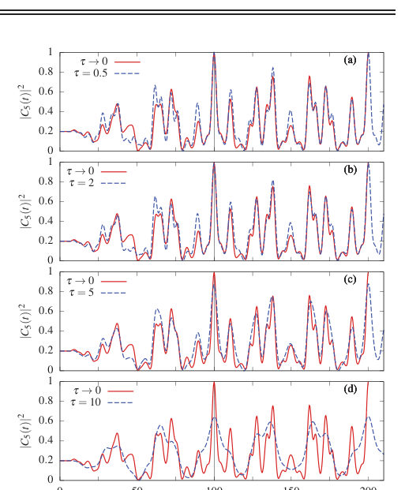
<figcaption class="paper-figure-caption"><b>Fig 1.</b> FIG. 1. Population of |5⟩of a 5-spin chain as a function of time for an intermediate measurement at Tint = 100 and final propagation time Tend = 200. Results are shown for measurement windows with (a) τ = 0.5, (b) 2, (c) 5 and (d) 10 compared with the limiting case τ →0. The penalty factor and field envelope are given by Eq. (14).</figcaption>
</figure>
<figure class="paper-figure-card">
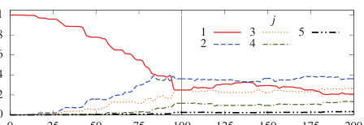
<figcaption class="paper-figure-caption"><b>Fig 2.</b> FIG. 3. Population of the eigenstates ψk(k = 1, . . . 5) as a function of time, for an intermediate measurement at Tint = 100 and final propagation time Tend = 200.</figcaption>
</figure>
<figure class="paper-figure-card">
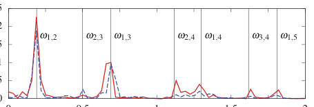
<figcaption class="paper-figure-caption"><b>Fig 3.</b> FIG. 4. Power spectrum of the optimal driving field, ε(t), for an intermediate measurement at Tint = 100 and final propa- gation time Tend = 200 (solid red) and single measurement at Tend = 200 (dashed blue). The transition energies, ωj,k cor- responding to the gap between the eigenenergies (see Table I) are shown as vertical lines.</figcaption>
</figure>
<figure class="paper-figure-card">
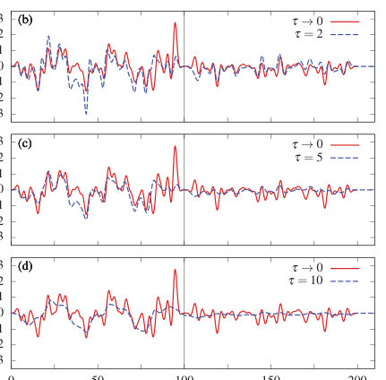
<figcaption class="paper-figure-caption"><b>Fig 4.</b> FIG. 2. Optimal control field as a function of time for an intermediate measurement at Tint = 100 and final propaga- tion time Tend = 200. Results are shown for measurement windows with (a) τ = 0.5, (b) 2, (c) 5 and (d) 10 compared with the limiting case τ →0. The penalty factor and field envelope are given by Eq. (14).</figcaption>
</figure>
<figure class="paper-figure-card">
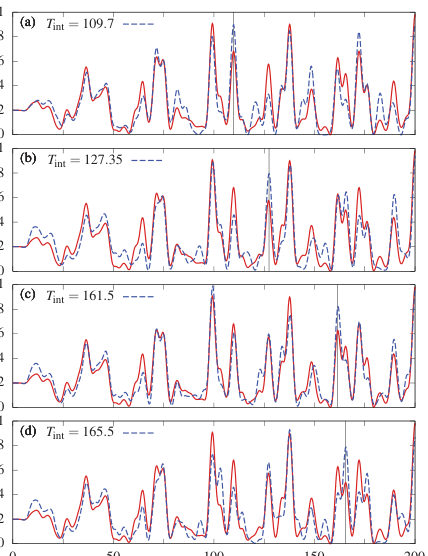
<figcaption class="paper-figure-caption"><b>Fig 5.</b> FIG. 5. Population of |5⟩as a function of time for (a) Tint = 109.7, (b) 127.35, (c) 161.5 and (d) 165.5 and T = 200 along with non-intermediate time measurement (solid red). The penalty factor and envelope of the control field is given by Eq. (14) and Tε = 100.</figcaption>
</figure>
</div>

<p><strong>Summary.</strong> The paper advances Quantum Optimal Control theory by developing methods to optimize quantum observables measured at multiple intermediate times. Using a 5-spin Heisenberg chain model, the authors demonstrate that incorporating these intermediate measurements allows for active manipulation of post-pulse dynamics, successfully controlling quantum state revivals while managing the associated mathematical complexities of costate discontinuities.</p>
<p><strong>Why it may be interesting.</strong> This work is highly relevant as it tackles open quantum system dynamics by providing a rigorous mathematical tool (multi-time QOC) to actively steer complex time evolution processes like revival control, which is crucial for quantum memory and simulation.</p>
<details>
<summary>Detailed structure</summary>
<p><strong>Main problem.</strong> The work extends Quantum Optimal Control (QOC) protocols to optimize physical observables measured at arbitrary intermediate times, moving beyond standard final-time optimization.</p>
<p><strong>Main result.</strong> Simultaneous optimization of multiple intermediate observables reshapes the driving field to balance transient targets with the final population, enabling active manipulation and dynamic tracking of quantum state revivals.</p>
<p><strong>Method.</strong> A variational approach is used within a Krotov algorithm framework, specifically adapting it to handle discontinuities in the costate trajectory induced by instantaneous (Dirac-delta) intermediate measurements.</p>
<p><strong>Model / system.</strong> The study uses a 5-spin-$1/2$ chain modeled by the Heisenberg XXX Hamiltonian, restricted to the single-excitation manifold. The control is applied via an external time-dependent field $\varepsilon(t)$.</p>
<p><strong>Key observables.</strong> Population of the Dicke state $|5
angle$, denoted $C_5(t) = |\langle \psi(t)| |5
angle|^2$, and the optimal driving field $\varepsilon(t)$.</p>
<p><strong>Important parameters / regimes.</strong> The measurement window width ($ au$), which is taken to zero for ideal instantaneous measurements, and the penalty factor $\alpha$.</p>
<p><strong>Assumptions / limitations.</strong> Standard QOC assumes optimization at a single final time; this work treats intermediate observations as Dirac-delta functions, requiring specialized handling of costate jumps.</p>
<p><strong>Figures summary.</strong> Figures compare population dynamics ($|C_5(t)|^2$) for different intermediate measurement times ($T_{int}$) versus standard protocols. The power spectrum (Fig. 4) shows enhanced spectral peaks when intermediate measurements are included.</p>
<p><strong>Paper structure.</strong> The paper first introduces the limitation of single-time QOC, then develops the theoretical framework to handle multi-time optimization via costate jump conditions and Krotov adaptation. Finally, it applies this method to the spin chain model to demonstrate control over revivals.</p>
</details>
<details>
<summary>Abstract</summary>
<p>Standard Quantum Optimal Control (QOC) protocols typically maximize a physical objective just at a final target time. However, tracking or measuring the quantum state during the time evolution requires the control at intermediate stages of their evolution. In this work, we extend QOC to accommodate the simultaneous optimization of observables at arbitrary intermediate times. Using a variational approach, we show that intermediate observations induce discontinuities in the costate trajectory, which can be handled with a Krotov algorithm leading to monotonic optimization and convergent results in the limit of zero temporal measurement windows. We apply this multi-time formulation to a Heisenberg XXX spin chain to control the propagation, including field-free revivals, of a Dicke state excitation. Our results demonstrate that simultaneous optimization of the same observable reshapes the driving field to balance intermediate targets with final populations. Finally, we show how this framework enables dynamic tracking of spin excitations and the active manipulation of post-pulse quantum state revivals.</p>
</details>
<p><sub><a href="#top">↑ back to top</a></sub></p>

<p><a id="paper-2607.29206"></a></p>
<h3 id="chiral-magnons-for-spin-qubit-state-transfer"><a href="http://arxiv.org/abs/2607.29206v1">Chiral magnons for spin-qubit state transfer</a></h3>
<p><strong>Authors:</strong> Martijn Dols, Carlos Gonzalez-Ballestero, Mikhail Cherkasskii, Christian L. Degen, Victor A. S. V. Bittencourt, Silvia Viola Kusminskiy<br>
<strong>Type:</strong> theory · <strong>Category:</strong> quantum information and computing · <strong>PDF:</strong> <a href="https://arxiv.org/pdf/2607.29206v1">https://arxiv.org/pdf/2607.29206v1</a><br>
<strong>Analysis basis:</strong> full PDF text, analyzed in chunks
<strong>Topic relevance:</strong> 🔥 <code>spintronics-quantum-optics interface</code> <strong>4/5</strong> · <code>correlated / nonlocal dissipation</code> <strong>3/5</strong> · <code>exotic spin models in light-matter</code> <strong>3/5</strong> · <code>QC/QI experiment</code> <strong>2/5</strong> · <code>methods for driven-dissipative</code> <strong>2/5</strong> · <code>non-equilibrium dynamics</code> <strong>2/5</strong> · <code>Keldysh / 2PI / non-Gaussian methods</code> <strong>1/5</strong> · <code>analog quantum simulation</code> <strong>1/5</strong> · <code>driven-dissipative phase transition</code> <strong>1/5</strong> · <code>entanglement &amp; information structure</code> <strong>1/5</strong></p>
<div class="figure-strip-hint">↔ Scroll figures horizontally</div>
<div class="paper-figures-scroll">
<figure class="paper-figure-card">
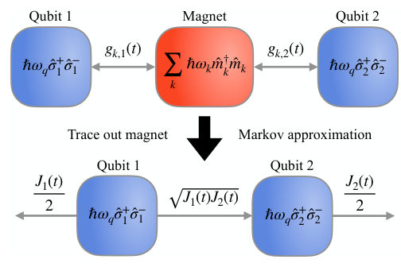
<figcaption class="paper-figure-caption"><b>Fig 1.</b> FIG. 1: Two qubits i = 1, 2 are coupled to a magnon bath with the time-dependent coupling gk,i(t) limited to one propagation direction of the magnons. The effec- tive qubit-qubit coupling is unidirectional, such that the dynamics of qubit 2 are influenced by qubit 1, but not vice versa. The qubits dissipate into the bath at a rate Ji(t)/2.</figcaption>
</figure>
<figure class="paper-figure-card">
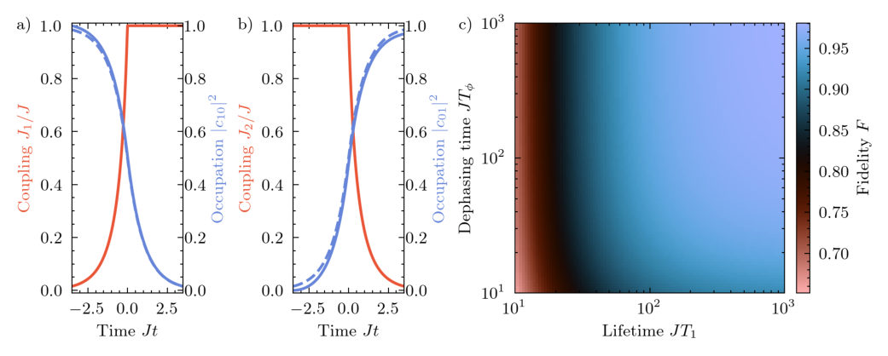
<figcaption class="paper-figure-caption"><b>Fig 2.</b> FIG. 2: In red: effective coupling a) J1 and b) J2 normalized by its maximal value J as a function of time t normalized by J. In blue: simulated occupation (solid line) a) |c10(t)|2 and b) |c01(t)|2 and the ideal occupation as per Eq. (14) (dashed line) a) 1−f(t) and b) f(t). c) Fidelity of the final state using the effective couplings of Eq. (15) as a function of the lifetime T1 and dephasing time Tϕ of the qubit normalized by the maximal coupling J. In all figures we used Jtf = 3.5, α = 0 and β = 1.</figcaption>
</figure>
<figure class="paper-figure-card">
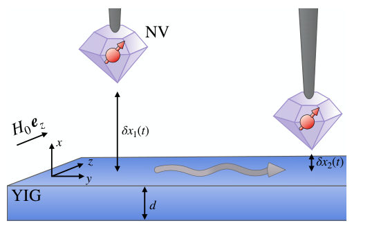
<figcaption class="paper-figure-caption"><b>Fig 3.</b> FIG. 4: The proposed setup. Two NV centers integrated with a tip are coupled unidirectionally through the chiral and nonreciprocal magnon surface modes of a YIG stripe with thickness d. The coupling of the NV center i to the magnons can be varied through the external field H0(t) as well as the position δxi(t). The magnons propagate perpendicular to the external field H0ez.</figcaption>
</figure>
<figure class="paper-figure-card">
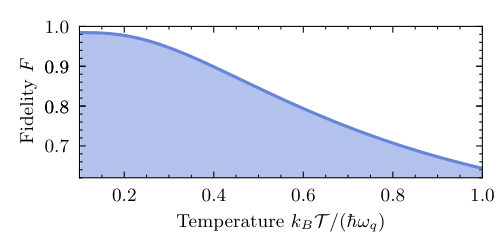
<figcaption class="paper-figure-caption"><b>Fig 4.</b> FIG. 3: Fidelity F of the protocol as a function of the temperature T normalized by ℏωq/kB. The same param- eters as in Fig. 2 are used.</figcaption>
</figure>
<figure class="paper-figure-card">
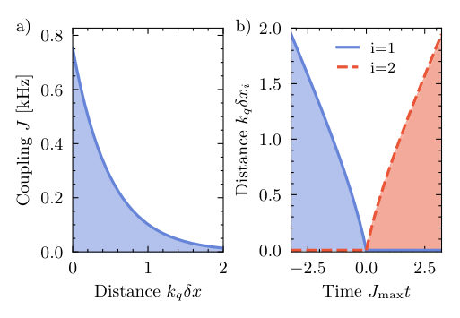
<figcaption class="paper-figure-caption"><b>Fig 5.</b> FIG. 5: a) Coupling strength J as a function of the distance δx normalized by the resonant wave number kq. b) Distance δxi of qubit i normalized by the resonant wave number kq as a function of the time t normalized by the coupling Jmax.</figcaption>
</figure>
</div>

<p><strong>Summary.</strong> The authors present a protocol for transferring quantum states between two distant spin qubits mediated by chiral magnons in a YIG/NV center hybrid system. They achieve this by dynamically controlling the coupling such that decoherence losses are avoided via dark-state engineering. This work expands the utility of magnonics as a robust tool for quantum information processing at solid-state distances.</p>
<p><strong>Why it may be interesting.</strong> This work directly addresses quantum networking by proposing a solid-state mechanism to mediate long-range entanglement and state transfer between qubits using magnonic excitations, which is highly relevant to open quantum systems research.</p>
<details>
<summary>Detailed structure</summary>
<p><strong>Main problem.</strong> The paper proposes a protocol to transfer an arbitrary quantum state between two distant spin qubits using chiral magnons as mediators.</p>
<p><strong>Main result.</strong> High-fidelity state transfer ($\gtrsim 0.95$) can be achieved over several micron distances using realistic experimental parameters.</p>
<p><strong>Method.</strong> State transfer is realized by time-modulating the coupling strength such that the two-spin-qubit system remains in a dark state of the magnon bath, thereby bypassing decoherence losses.</p>
<p><strong>Model / system.</strong> The physical platform is a hybrid system combining two Nitrogen-Vacancy (NV) centers coupled to nonreciprocal and chiral magnon modes within an yttrium iron garnet (YIG) stripe. The dynamics are modeled using a master equation incorporating time-dependent coupling terms.</p>
<p><strong>Key observables.</strong> State transfer fidelity ($F$), which is shown to exceed 0.95 under optimal conditions.</p>
<p><strong>Important parameters / regimes.</strong> The distance between NV centers (several microns), temperature, dephasing time ($T_\phi$), and spin qubit lifetime ($T_1$).</p>
<p><strong>Assumptions / limitations.</strong> The Markov approximation is used for the master equation, and it assumes that the two-spin-qubit state can be kept in a dark state relative to the magnon bath.</p>
<p><strong>Figures summary.</strong> Figure 1 illustrates the Hamiltonian structure showing unidirectional effective coupling. Figure 3 demonstrates fidelity degradation as temperature increases due to thermal excitation effects.</p>
<p><strong>Paper structure.</strong> The paper introduces the protocol, models the system dynamics using a master equation incorporating time-dependent couplings, details two methods for achieving this time modulation (varying distance or magnetic field), and concludes with numerical evaluations of feasibility.</p>
</details>
<details>
<summary>Abstract</summary>
<p>We propose a protocol where chiral magnons mediate a state transfer between two distant spin qubits. The protocol is implemented by varying the coupling between the spin qubits and the magnons in time, such that an arbitrary state is transferred from one qubit to the other. The modulation of the coupling is performed such that the two-spin-qubit state is kept as a dark state of the magnon bath, bypassing the associated losses. We show that the protocol can be realized on a hybrid system composed of two nitrogen-vacancy (NV) centers coupled to the nonreciprocal and chiral magnon modes of an yttrium iron garnet (YIG) stripe. We propose two methods to achieve the time modulation of the NV-magnon coupling: i) the NV-magnet distance of both NV centers is varied; ii) the external magnetic field and the NV-magnet distance of one NV center are varied. We evaluate the implementability of both methods numerically, including the constraints on the temperature, and the dephasing time and minimal lifetime of the spin qubits required for high-fidelity state transfer. We find that using realistic experimental parameters, a state transfer between NV centers at a distance of several microns can be achieved with a fidelity $\gtrsim 0.95$. Our findings expand the toolbox of magnonics for quantum information purposes.</p>
</details>
<p><sub><a href="#top">↑ back to top</a></sub></p>

<p><a id="paper-2607.29475"></a></p>
<h3 id="dissipation-enhanced-vortex-clustering-in-a-compressible-quantum-fluid"><a href="http://arxiv.org/abs/2607.29475v1">Dissipation-enhanced vortex clustering in a compressible quantum fluid</a></h3>
<p><strong>Authors:</strong> P. Comaron, M. Matuszewski, D. Sanvitto, D. Ballarini, A. S. Lanotte<br>
<strong>Type:</strong> theory · <strong>Category:</strong> quantum gases · <strong>PDF:</strong> <a href="https://arxiv.org/pdf/2607.29475v1">https://arxiv.org/pdf/2607.29475v1</a><br>
<strong>Analysis basis:</strong> full PDF text, analyzed in chunks
<strong>Topic relevance:</strong> 🔥 <code>non-equilibrium dynamics</code> <strong>4/5</strong> · <code>correlated / nonlocal dissipation</code> <strong>3/5</strong> · <code>driven-dissipative phase transition</code> <strong>3/5</strong> · <code>methods for driven-dissipative</code> <strong>3/5</strong> · <code>analog quantum simulation</code> <strong>2/5</strong> · <code>non-equilibrium universality</code> <strong>2/5</strong> · <code>Frenkel-Kontorova</code> <strong>1/5</strong> · <code>Keldysh / 2PI / non-Gaussian methods</code> <strong>1/5</strong> · <code>entanglement &amp; information structure</code> <strong>1/5</strong></p>
<div class="figure-strip-hint">↔ Scroll figures horizontally</div>
<div class="paper-figures-scroll">
<figure class="paper-figure-card">
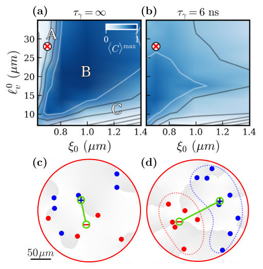
<figcaption class="paper-figure-caption"><b>Fig 1.</b> FIG. 1. Phase portrait of vortex clustering showing the maximum of the correlation Cmax ≡max(⟨C⟩) as a function of the initial values of the intervortex distance ℓ0 v and heal- ing length ξ0. The average ⟨•⟩is taken over the statistical sample. Panel (a) refers to the conservative case (τγ →∞), while panel (b) refers to a dissipative case with τγ = 6ns. The continuous lines fix the level sets: the white line delimiting re- gion “B” is the locus of Cmax = 0.85, while the others are level sets separated by 0.15 difference. The red-crossed filled circles correspond to the case with (ξ0, ℓ0 v) = (0.7, 28)µm, and an ini- tial sound velocity of cs = p</figcaption>
</figure>
<figure class="paper-figure-card">
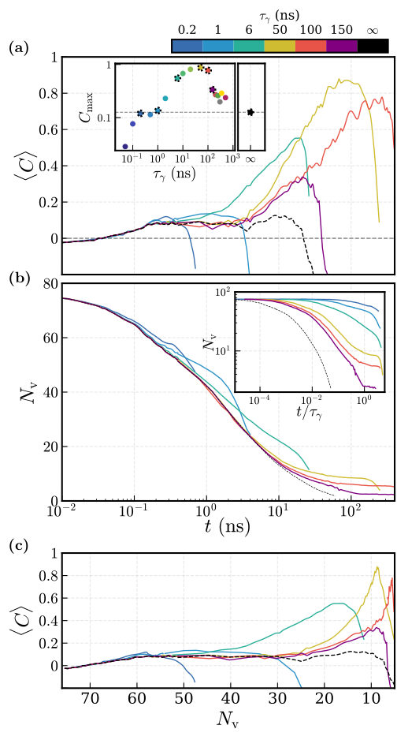
<figcaption class="paper-figure-caption"><b>Fig 2.</b> FIG. 2. (a) The temporal evolution of the correlation ⟨C⟩, for condensates with particle lifetime in the range τγ ∈ [0.2−150]ns. In the inset, the maximal clustering value Cmax is reported as a function of the particle lifetime. Statistical error bars are smaller than the symbol size. (b) The temporal evolution of the vortex number Nv(t) is plotted as a function of time (main panel) and as a function of the rescaled time (inset). (c) Parametric representation of ⟨C(t)⟩as a function of the remaining vortex population Nv(t), with time progress- ing from left to right. The distinct trajectories show that the relation between clustering and vortex depletion depends on the particle lifetime. The...</figcaption>
</figure>
<figure class="paper-figure-card">
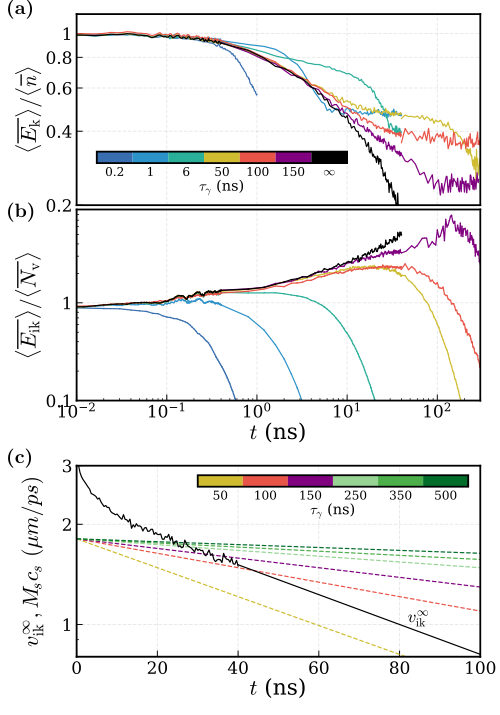
<figcaption class="paper-figure-caption"><b>Fig 3.</b> FIG. 3. (a) Time evolution of the normalised total kinetic en- ergy per particle ⟨Ek⟩/⟨n⟩, where ⟨Ek⟩≡⟨Ek(t)⟩/⟨Ek(t = 0)⟩ and ⟨n⟩≡⟨n(t)⟩/n0 (in the conservative case, ⟨n⟩= 1 by def- inition). (b) Time evolution of the normalised incompressible kinetic energy per vortex, ⟨Eik⟩/⟨Nv⟩. (c) The comparison between the characteristic velocity scale of the vortex sec- tor and the sound-velocity scale associated with particle-loss- induced rarefaction, from which the crossover time ts reported in Fig. 4 is extracted. The value of Ms = 0.6 is defined to match the crossing time ts with the depletion time in the con- servative case</figcaption>
</figure>
<figure class="paper-figure-card">
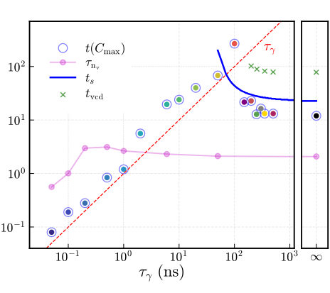
<figcaption class="paper-figure-caption"><b>Fig 4.</b> FIG. 4. The time of maximum clustering t(Cmax) (filled cir- cles) is compared to the particle lifetime τγ (red dashed line), to the characteristic vortex-depletion timescale τnv (magenta line with dots), and to the crossover times ts (blue line) ex- tracted from Fig. 3(c), where the characteristic velocity scale of the vortex sector becomes comparable to the sound-velocity scale associated with particle-loss-induced rarefaction. Oper- ationally, τnv marks the onset of the regime in which vortex correlations begin to compete with pure particle-loss trunca- tion, while ts marks the opposite boundary beyond which the residual vortex population no longer sustains efficient growth of clustering....</figcaption>
</figure>
</div>

<p><strong>Summary.</strong> This paper demonstrates that particle loss (dissipation) does not merely limit vortex clustering in a quantum fluid; instead, it actively enhances it beyond what is possible in conservative systems. The enhancement peaks at intermediate decay rates because this regime allows background rarefaction and kinetic energy relaxation to compete constructively with vortex correlation development.</p>
<p><strong>Why it may be interesting.</strong> This work is highly relevant as it explores non-equilibrium dynamics in quantum fluids, showing that dissipation can drive complex ordering phenomena by selecting optimal timescales rather than simply truncating the process. This has implications for understanding decoherence effects on superfluid order.</p>
<details>
<summary>Detailed structure</summary>
<p><strong>Main problem.</strong> The study investigates how particle loss (dissipation) affects vortex clustering dynamics in a compressible quantum fluid, specifically determining if dissipation can enhance ordering beyond the purely conservative limit.</p>
<p><strong>Main result.</strong> Dissipation enhances transient vortex clustering significantly at intermediate particle-loss rates, establishing a finite dynamical window where correlations are stronger than in the conservative case.</p>
<p><strong>Method.</strong> The research employs numerical simulations solving the dissipative Gross-Pitaevskii equation (dGPE) for freely decaying, confined condensates initialized with random vortices and antivortices.</p>
<p><strong>Model / system.</strong> The system is a two-dimensional compressible quantum fluid modeled by the dGPE incorporating linear particle loss ($\gamma$). The dynamics are studied using parameters relevant to exciton-polariton condensates.</p>
<p><strong>Key observables.</strong> Maximum mean vortex correlation ($C_{\max}$), temporal evolution of $\langle C(t) 
angle$ and $N_v(t)$, and the decay rates/components of total, kinetic, and interaction energy.</p>
<p><strong>Important parameters / regimes.</strong> Particle lifetime ($    au_\gamma$), which dictates a nonmonotonic dependence on clustering efficiency; intermediate loss rates are optimal for enhancement.</p>
<p><strong>Assumptions / limitations.</strong> The analysis assumes linear particle losses ($\gamma$) and models the system using the dGPE framework, comparing results against the conservative limit ($\gamma=0$).</p>
<p><strong>Figures summary.</strong> Figures illustrate the non-monotonic dependence of clustering on $ au_\gamma$, energy decay pathways showing competition between kinetic and interaction components, and phase portraits comparing dissipative vs. conservative ordering.</p>
<p><strong>Paper structure.</strong> The paper systematically analyzes the effect of dissipation on vortex correlations, first establishing the enhancement mechanism via $C_{\max}$ vs. $  au_\gamma$. It then delves into the underlying energy dynamics, decomposing total energy decay to show how kinetic and interaction energies evolve differently under loss compared to conservative evolution.</p>
</details>
<details>
<summary>Abstract</summary>
<p>Vortex clustering is commonly associated with conservative two-dimensional quantum-fluid dynamics. Therefore, particle loss is mainly expected to limit clustering by shortening the time available for vortex correlations to develop. Here we show instead that particle loss can enhance transient vortex clustering beyond the conservative evolution. We numerically study freely decaying, confined two-dimensional condensates initialized with random distributions of vortices and antivortices, and find a pronounced nonmonotonic dependence of the maximum clustering on particle lifetime. The enhancement is strongest at intermediate particle-loss rates, where loss-induced background rarefaction and incompressible kinetic energy relaxation occur on comparable timescales. Our results identify a finite dynamical window, selected by linear particle loss, in which a confined compressible quantum fluid develops stronger same-sign vortex correlations than in the conservative limit.</p>
</details>
<p><sub><a href="#top">↑ back to top</a></sub></p>

<p><a id="paper-2607.29292"></a></p>
<h3 id="potential-defect-driven-collective-modes-of-one-dimensional-two-component-quantum-droplets"><a href="http://arxiv.org/abs/2607.29292v1">Potential-defect-driven collective modes of one-dimensional two-component quantum droplets</a></h3>
<p><strong>Authors:</strong> Harsimranjit Kaur, Kuldeep Suthar<br>
<strong>Type:</strong> theory · <strong>Category:</strong> quantum gases · <strong>PDF:</strong> <a href="https://arxiv.org/pdf/2607.29292v1">https://arxiv.org/pdf/2607.29292v1</a><br>
<strong>Analysis basis:</strong> full PDF text, analyzed in chunks
<strong>Topic relevance:</strong> 🔥 <code>analog quantum simulation</code> <strong>4/5</strong> · 🔥 <code>non-equilibrium dynamics</code> <strong>4/5</strong> · <code>non-equilibrium universality</code> <strong>3/5</strong> · <code>Keldysh / 2PI / non-Gaussian methods</code> <strong>2/5</strong> · <code>driven-dissipative phase transition</code> <strong>2/5</strong> · <code>Frenkel-Kontorova</code> <strong>1/5</strong> · <code>correlated / nonlocal dissipation</code> <strong>1/5</strong> · <code>entanglement &amp; information structure</code> <strong>1/5</strong> · <code>methods for driven-dissipative</code> <strong>1/5</strong> · <code>scars &amp; prethermalization</code> <strong>1/5</strong></p>
<div class="figure-strip-hint">↔ Scroll figures horizontally</div>
<div class="paper-figures-scroll">
<figure class="paper-figure-card">
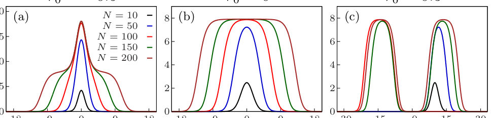
<figcaption class="paper-figure-caption"><b>Fig 1.</b> FIG. 1. The ground state density profiles of bosonic quantum droplet mixtures for different numbers of atoms at three barrier strengths: (a) V0 = −0.5 (attractive defect), (b) V0 = 0 (no defect), and (c) V0 = 0.3 (repulsive defect). The intercomponent interaction strength is fixed at g12 = −0.9, and the harmonic trap strength is set to λ = 0. The quantum states are stabilized due to LHY correction. Different lines present the density profiles for different N labeled in (a).</figcaption>
</figure>
<figure class="paper-figure-card">
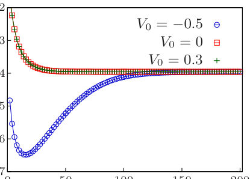
<figcaption class="paper-figure-caption"><b>Fig 2.</b> FIG. 3. The chemical potential µ(N) for different barrier strengths V0, with both µ and V0 measured in units of ℏωo. The saturation of µ beyond the critical atom number Ncr marks the flat-top droplet regime. Here, the g12 = −0.9.</figcaption>
</figure>
<figure class="paper-figure-card">
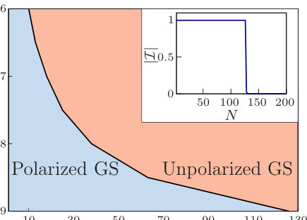
<figcaption class="paper-figure-caption"><b>Fig 3.</b> FIG. 2. The critical atom number Ncr for different attractive inter- component interaction strength g12. At N &lt; Ncr, the ground state becomes highly polarized, indicating localization of the condensate in one side of the double well. The inset shows the population im- balance as a function of the number of atoms for V0 = 0.3 and g12 = −0.9. Here, the barrier width is σ = 1.</figcaption>
</figure>
<figure class="paper-figure-card">
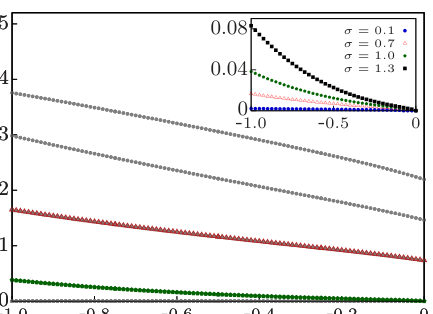
<figcaption class="paper-figure-caption"><b>Fig 4.</b> FIG. 4. The frequency of low-lying collective modes as the poten- tial defect is tuned from attractive to zero. The lowest zero-energy modes are the Goldstone modes corresponding to each component. The inset shows the enlarged view of the softening of (first excited) dipole mode with V0 for different values of the spatial width σ of potential. Here, the number of atoms is N = 150 and main fig- ure corresponds to σ = 1. The quasiparticle frequency is scaled with trapping frequency ωo and potential strength with correspond- ing quantum energy scale ℏωo.</figcaption>
</figure>
<figure class="paper-figure-card">
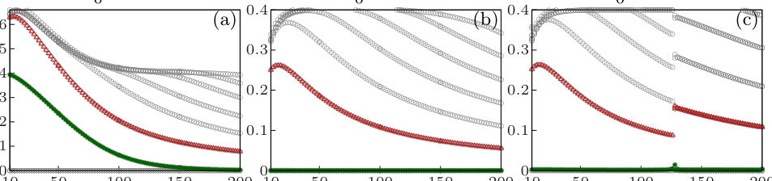
<figcaption class="paper-figure-caption"><b>Fig 5.</b> FIG. 5. Low-lying collective excitation frequencies as a function of the number of atoms for three different barrier strengths: (a) V0 = −0.5, (b) V0 = 0, and (c) V0 = 0.3. The intercomponent interaction strength is fixed at g12 = −0.9, and the harmonic trap strength is set to λ = 0. The green filled stars and red triangles denote the frequency of dipole and breathing modes, respectively, while the light-gray dots represent the higher mode frequencies.</figcaption>
</figure>
</div>

<p><strong>Summary.</strong> The paper theoretically examines two-component quantum droplets confined by a potential defect, incorporating beyond-mean-field LHY corrections. It finds that the defect strength dictates polarization transitions observable in the excitation spectrum and governs complex dynamic behaviors like fragmentation during interaction quenches. This offers predictive tools for controlling exotic many-body states in ultracold atomic gases.</p>
<p><strong>Why it may be interesting.</strong> This work provides detailed predictions about how external potentials and interspecies interactions drive phase transitions and dynamic instabilities in quantum droplet systems, which is highly relevant for experimental control in cold atom setups.</p>
<details>
<summary>Detailed structure</summary>
<p><strong>Main problem.</strong> The study investigates the ground-state properties and low-lying collective excitation spectra of a one-dimensional two-component quantum droplet confined by an external potential defect.</p>
<p><strong>Main result.</strong> The presence of a potential barrier induces polarization transitions visible as discontinuities in the excitation spectrum, while quench dynamics reveal complex fragmentation patterns depending on the interaction strength.</p>
<p><strong>Method.</strong> Theoretical analysis uses the extended Gross-Pitaevskii equation (eGPE) solved via imaginary-time propagation for ground states, and Bogoliubov theory/linearization for collective excitations.</p>
<p><strong>Model / system.</strong> The system is a binary mixture of ultradilute quantum droplets in quasi-1D geometry. The model incorporates mean-field interactions, attractive Lee-Huang-Yang (LHY) quantum fluctuations, and an external potential defect ($V(x)$).</p>
<p><strong>Key observables.</strong> Low-lying collective excitation frequencies ($\omega_j$), density profiles ($
ho_i(x)$), chemical potential ($\mu(N)$), and time evolution of population imbalance.</p>
<p><strong>Important parameters / regimes.</strong> Potential defect strength ($V_0$: attractive, zero, repulsive) and the intercomponent interaction strength ($g_{12}$).</p>
<p><strong>Assumptions / limitations.</strong> The analysis assumes quasi-1D geometry due to tight transverse confinement, and the LHY energy density is treated as a real correction.</p>
<p><strong>Figures summary.</strong> Figures illustrate ground state density profiles for different defect strengths (attractive/repulsive), plot the critical atom number ($N_{cr}$) vs. interaction strength, show chemical potential evolution ($\mu(N)$), and map out collective mode frequencies versus defect tuning ($V_0$).</p>
<p><strong>Paper structure.</strong> The paper systematically analyzes stationary states by solving eGPEs for various defects, followed by the calculation of excitation spectra using BdG equations. The latter part focuses on non-equilibrium dynamics via quench simulations (interaction and potential quenches).</p>
</details>
<details>
<summary>Abstract</summary>
<p>We examine a one-dimensional binary mixture of ultradilute quantum droplets in the presence of a central potential defect. The properties of the potential strength and the number of atoms exhibit distinct polarization transitions and low-lying ollective excitation spectra. The balance of (attractive) Lee-Huang-Yang quantum fluctuations and repulsive mean-field interactions results in a self-bound quantum droplet in a potential well. However, the potential barrier causes the polarization transition with the number of atoms, which is reflected in the excitation spectrum as a discontinuity and softening of the quasiparticle modes. We reveal that the critical number of atoms for the transition decreases as the attractive intercomponent interaction increases. Finally, the quench time dynamics of the interaction in potential barrier and well show the localization and diffusive fragmented droplets of two-component systems.</p>
</details>
<p><sub><a href="#top">↑ back to top</a></sub></p>

<p><a id="paper-2607.29647"></a></p>
<h3 id="revealing-the-spin-hydrodynamics-of-a-spin-imbalanced-unitary-fermi-gas"><a href="http://arxiv.org/abs/2607.29647v1">Revealing the Spin Hydrodynamics of a Spin-Imbalanced Unitary Fermi Gas</a></h3>
<p><strong>Authors:</strong> DeChao Zhang, Johannes Lang, J. E. Thomas<br>
<strong>Type:</strong> experiment · <strong>Category:</strong> quantum gases · <strong>PDF:</strong> <a href="https://arxiv.org/pdf/2607.29647v1">https://arxiv.org/pdf/2607.29647v1</a><br>
<strong>Analysis basis:</strong> full PDF text, analyzed in chunks
<strong>Topic relevance:</strong> 🔥 <code>analog quantum simulation</code> <strong>4/5</strong> · <code>exotic spin models in light-matter</code> <strong>3/5</strong> · <code>non-equilibrium dynamics</code> <strong>3/5</strong> · <code>spintronics-quantum-optics interface</code> <strong>3/5</strong> · <code>driven-dissipative phase transition</code> <strong>2/5</strong> · <code>non-equilibrium universality</code> <strong>2/5</strong> · <code>Keldysh / 2PI / non-Gaussian methods</code> <strong>1/5</strong> · <code>correlated / nonlocal dissipation</code> <strong>1/5</strong> · <code>methods for driven-dissipative</code> <strong>1/5</strong></p>
<div class="figure-strip-hint">↔ Scroll figures horizontally</div>
<div class="paper-figures-scroll">
<figure class="paper-figure-card">
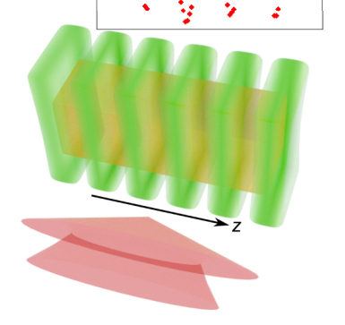
<figcaption class="paper-figure-caption"><b>Fig 1.</b> FIG. 1. Optical box with spatially periodic pertur- bation. Atoms (yellow) are perturbed by a repulsive green light potential and imaged with resonant light (red arrow). Inset (top) shows the differing equilibrium responses of the majority (blue) and minority (red) components, which sets the initial condition for measurement of the many-body spin- hydrodynamics.</figcaption>
</figure>
<figure class="paper-figure-card">
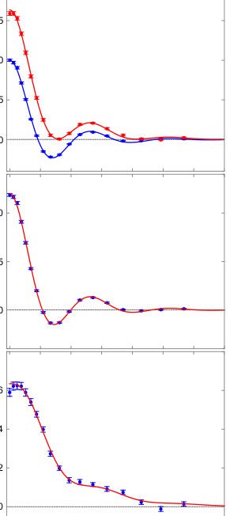
<figcaption class="paper-figure-caption"><b>Fig 2.</b> FIG. 2. Evolution of the spin polarization and spin density perturbations. (A) Upper red curve: Minority spin Fourier component δn↓(q, t)/n0↓. Lower blue curve: Ma- jority spin Fourier component δn↑(q, t)/n0↑. (B) Total den- sity Fourier component δn(q, t)/n0. (C) Spin polarization perturbation δ ¯P(q, t) ≡δn↓/n0↓−δn↑/n0↑. Solid curves show the spin-hydrodynamics model.</figcaption>
</figure>
<figure class="paper-figure-card">
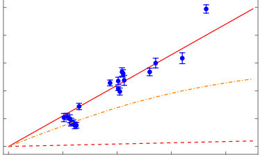
<figcaption class="paper-figure-caption"><b>Fig 3.</b> FIG. 3. Energy-spin Seebeck coefficient Sǫ = ˜Sǫ n</figcaption>
</figure>
<figure class="paper-figure-card">
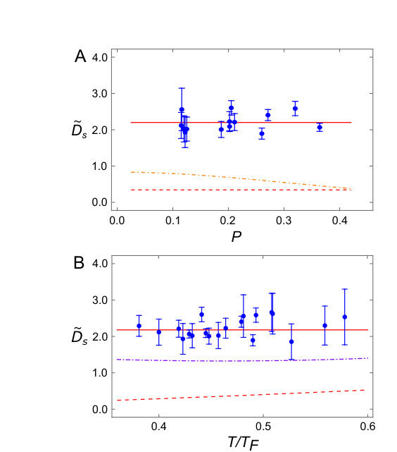
<figcaption class="paper-figure-caption"><b>Fig 4.</b> FIG. 4. Spin diffusivity Ds = ˜Ds ¯h</figcaption>
</figure>
</div>

<p><strong>Summary.</strong> The authors investigate spin hydrodynamics in a spin-imbalanced unitary Fermi gas using an ultracold atom setup. By analyzing the relaxation dynamics following periodic perturbations, they extract fundamental transport coefficients like spin diffusivity and the energy-spin Seebeck coefficient. This work establishes a quantitative experimental platform for studying spin caloritronics in strongly correlated quantum matter.</p>
<p><strong>Why it may be interesting.</strong> This work provides direct, quantitative measurements of spin-dependent transport phenomena (spin Seebeck effect) in a highly controllable ultracold atomic platform, offering crucial benchmarks for theoretical models of strongly correlated quantum matter.</p>
<details>
<summary>Detailed structure</summary>
<p><strong>Main problem.</strong> The study investigates spin transport, specifically spin hydrodynamics and spin caloritronics, which remains poorly understood in strongly interacting quantum fluids.</p>
<p><strong>Main result.</strong> The experiment successfully measures fundamental energy and spin current coefficients ($   ilde{D}<em _sigma="\sigma">s$ and $    ilde{S}</em>$), establishing a quantitative framework for universal spin hydrodynamics in the unitary Fermi gas.</p>
<p><strong>Method.</strong> Measurements involve quenching spatially periodic optical potentials to induce density and spin polarization modulations, followed by fitting the time evolution of these components using linear-response hydrodynamic models.</p>
<p><strong>Model / system.</strong> The system is a spin-imbalanced unitary Fermi gas (UFG) confined in an optical box. The dynamics are modeled using coupled differential equations describing perturbations in density, spin polarization, and temperature.</p>
<p><strong>Key observables.</strong> Spin diffusivity ($    ilde{D}<em _sigma="\sigma">s$), energy-spin Seebeck coefficient ($ ilde{S}</em>_1$), and the evolution of polarization modulation $\delta P(q, t)$.}$), first sound diffusivity ($  ilde{D</p>
<p><strong>Important parameters / regimes.</strong> Polarization ($P$), reduced temperature ($T/T_F$), wavevector ($q$), and characteristic transport coefficients.</p>
<p><strong>Assumptions / limitations.</strong> The analysis relies on linear-response theory, fitting data to hydrodynamic equations derived from irreversible thermodynamics, and utilizing the long wavelength limit for certain derivations.</p>
<p><strong>Figures summary.</strong> Figures illustrate the optical setup with periodic perturbations; subsequent figures show time evolution of Fourier components ($\delta P(q, t)$) and plots comparing extracted transport coefficients ($    ilde{S}_{\sigma},   ilde{D}_s,  ilde{D}_1$) against theoretical predictions as a function of temperature or polarization.</p>
<p><strong>Paper structure.</strong> The paper introduces the problem by detailing the experimental setup and measurement techniques. It then develops the hydrodynamic model governing spin and energy transport. Key results are presented through fitting data to extract universal dimensionless coefficients, culminating in consistency checks across different measurable quantities like $  ilde{D}_1$.</p>
</details>
<details>
<summary>Abstract</summary>
<p>Hydrodynamics governs diverse collective phenomena in nature, from the expansion of a quarkgluon plasma to viscous electron flow in quantum materials. In strongly interacting hydrodynamic fluids, the transport of spin remains poorly understood. Here, we investigate spin transport in the hydrodynamic regime of a spin-imbalanced unitary Fermi gas confined in a uniform optical box. By quenching a spatially periodic optical potential that modulates both the density and spin polarization, we observe the relaxation of the many-body system, which determines both the spin diffusivity and the spin Seebeck/Peltier coefficients in a homogeneous quantum gas. Our measurements provide parameter-free benchmarks for microscopic theories and establish an ultracold atom platform for studying spin caloritronics in strongly correlated matter.</p>
</details>
<p><sub><a href="#top">↑ back to top</a></sub></p>

<p><a id="paper-2607.29670"></a></p>
<h3 id="fermionic-entropy-an-efficiently-measurable-strong-monotone-for-non-gaussianity"><a href="http://arxiv.org/abs/2607.29670v1">Fermionic entropy: an efficiently measurable strong monotone for non-Gaussianity</a></h3>
<p><strong>Authors:</strong> Lorenzo Leone, Lennart Bittel<br>
<strong>Type:</strong> theory · <strong>Category:</strong> quantum information and computing · <strong>PDF:</strong> <a href="https://arxiv.org/pdf/2607.29670v1">https://arxiv.org/pdf/2607.29670v1</a><br>
<strong>Analysis basis:</strong> full PDF text, analyzed in chunks
<strong>Topic relevance:</strong> 🔥 <code>entanglement &amp; information structure</code> <strong>4/5</strong> · <code>Keldysh / 2PI / non-Gaussian methods</code> <strong>3/5</strong> · <code>analog quantum simulation</code> <strong>3/5</strong> · <code>non-equilibrium dynamics</code> <strong>2/5</strong> · <code>quantum measurements</code> <strong>2/5</strong> · <code>correlated / nonlocal dissipation</code> <strong>1/5</strong> · <code>driven-dissipative phase transition</code> <strong>1/5</strong> · <code>measurement-induced transitions</code> <strong>1/5</strong> · <code>methods for driven-dissipative</code> <strong>1/5</strong> · <code>non-equilibrium universality</code> <strong>1/5</strong></p>
<div class="figure-strip-hint">↔ Scroll figures horizontally</div>
<div class="paper-figures-scroll">
<figure class="paper-figure-card">
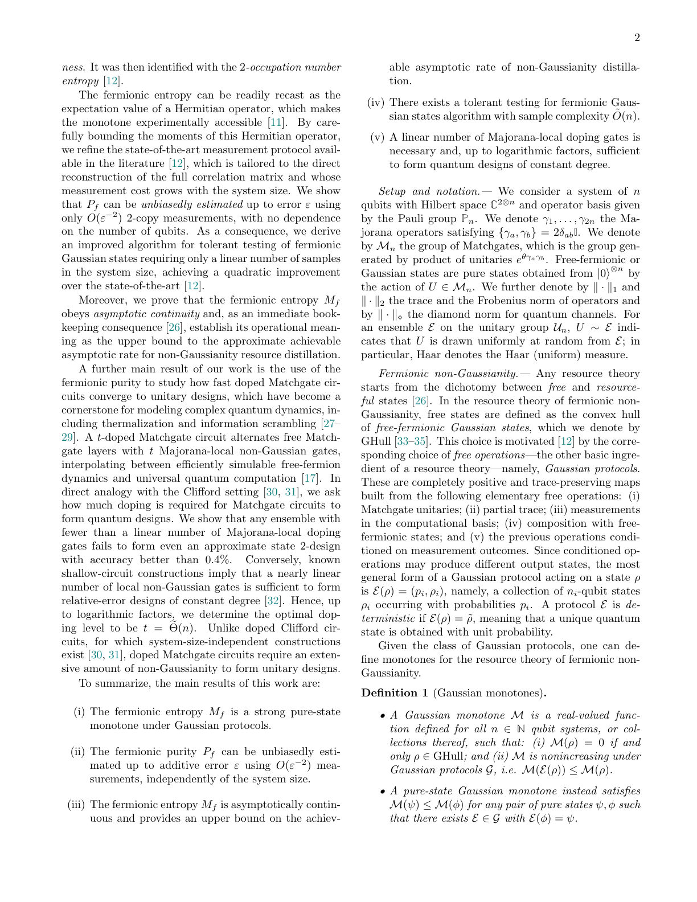
<figcaption class="paper-figure-caption"><b>Fig 1.</b> Low-resolution page preview, page 2</figcaption>
</figure>
<figure class="paper-figure-card">
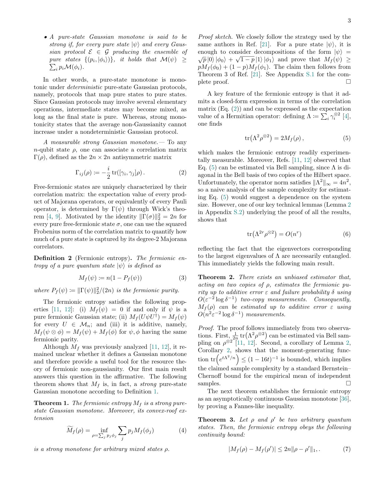
<figcaption class="paper-figure-caption"><b>Fig 2.</b> Low-resolution page preview, page 3</figcaption>
</figure>
<figure class="paper-figure-card">
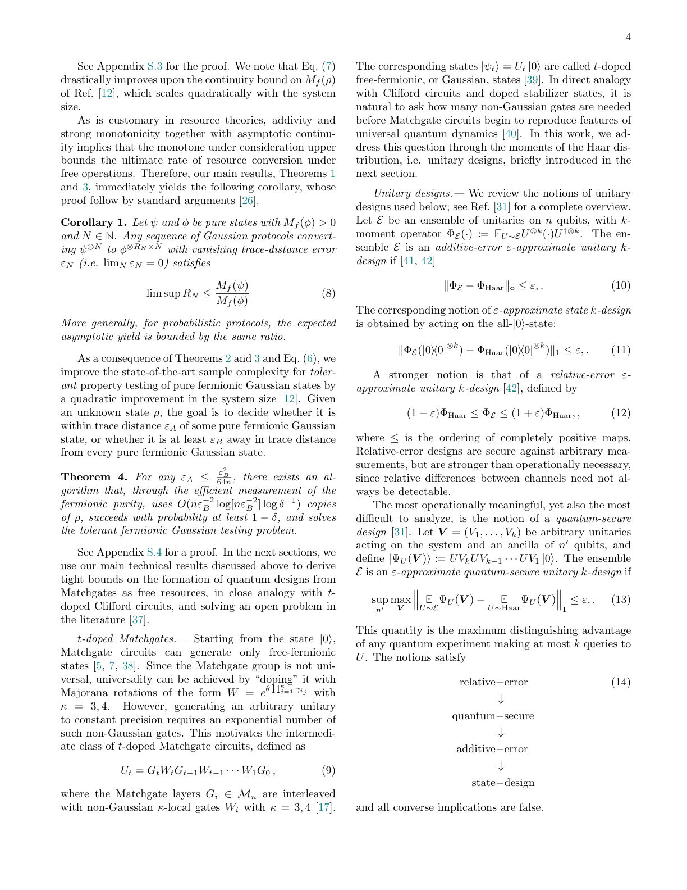
<figcaption class="paper-figure-caption"><b>Fig 3.</b> Low-resolution page preview, page 4</figcaption>
</figure>
<figure class="paper-figure-card">
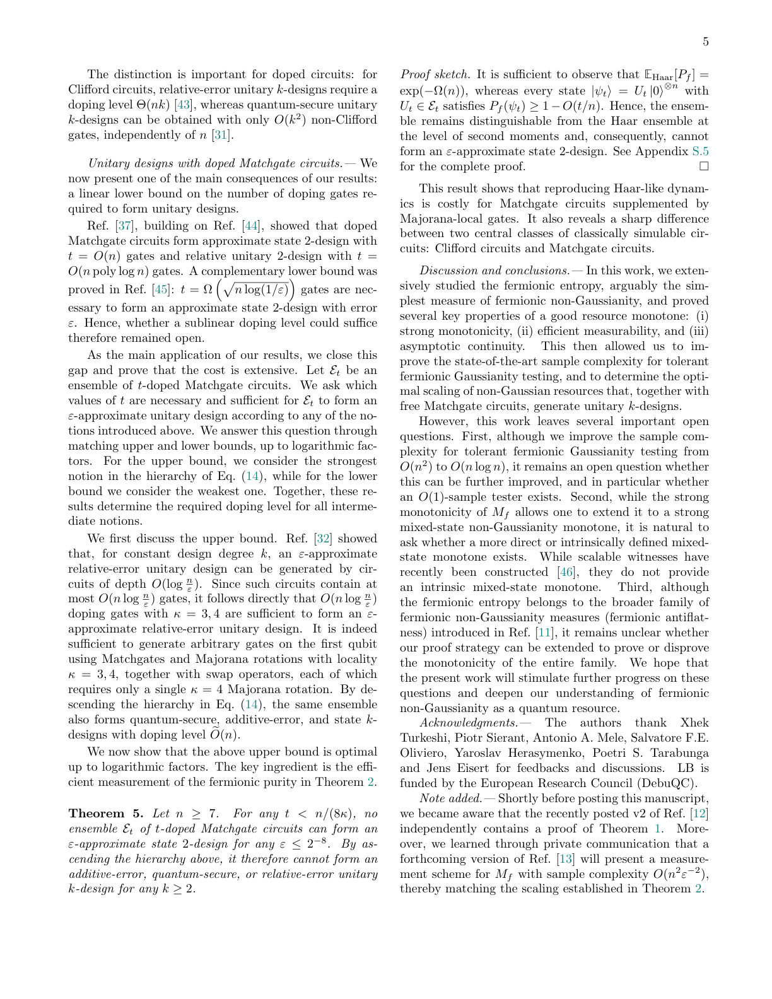
<figcaption class="paper-figure-caption"><b>Fig 4.</b> Low-resolution page preview, page 5</figcaption>
</figure>
<figure class="paper-figure-card">
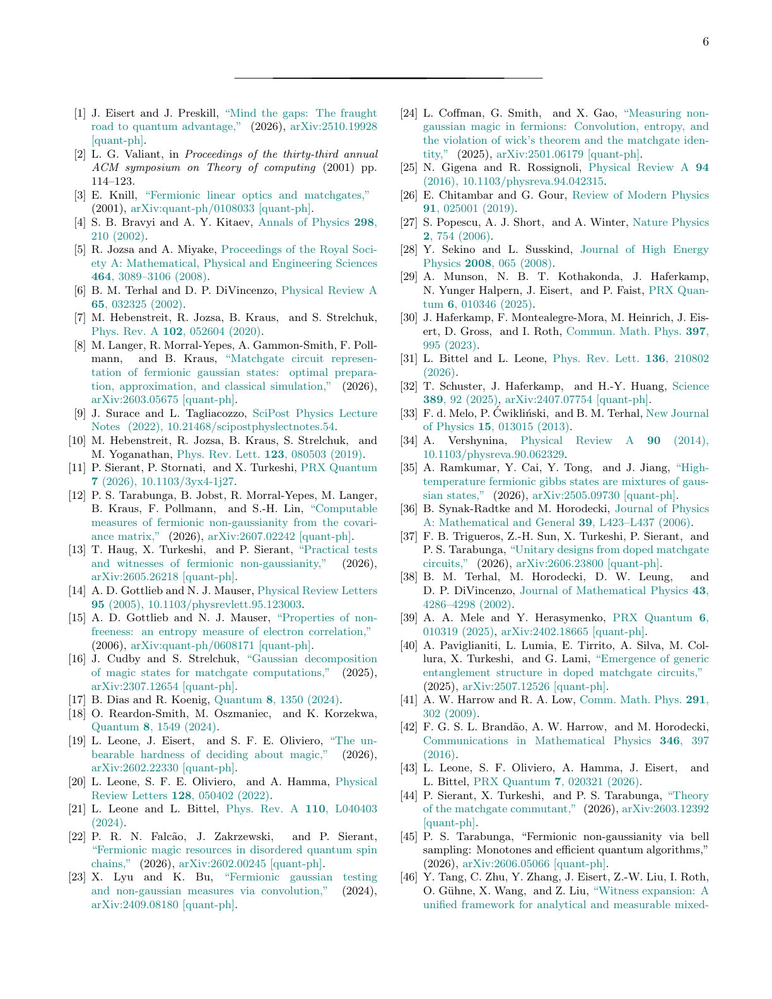
<figcaption class="paper-figure-caption"><b>Fig 5.</b> Low-resolution page preview, page 6</figcaption>
</figure>
</div>

<p><strong>Summary.</strong> The paper introduces the fermionic entropy as a robust and efficiently measurable monotone quantifying non-Gaussianity in fermionic quantum states. It provides rigorous measurement protocols for this entropy and applies these findings to determine the minimum necessary complexity (number of gates) required to achieve universal quantum operations, particularly in doped circuit architectures.</p>
<p><strong>Why it may be interesting.</strong> This work directly addresses resource quantification—a central theme in modern quantum information theory—by providing concrete, measurable diagnostics ($M_f$) applicable to physical platforms like superconducting qubits or trapped ions that implement fermionic Hamiltonians.</p>
<details>
<summary>Detailed structure</summary>
<p><strong>Main problem.</strong> The core challenge is developing mathematically rigorous and experimentally accessible monotones to quantify fermionic non-Gaussianity, which represents a key resource for quantum computation beyond free-fermion dynamics.</p>
<p><strong>Main result.</strong> The paper establishes the fermionic entropy as a strong pure-state Gaussian monotone and determines that generating approximate unitary designs requires an extensive number of non-Gaussian gates in doped Matchgate circuits.</p>
<p><strong>Method.</strong> The authors use advanced resource theory techniques, deriving measurement protocols (e.g., two-copy measurements) to estimate the purity/entropy and applying complexity analysis to design requirements.</p>
<p><strong>Model / system.</strong> The study focuses on fermionic systems described by $n$-qubit states ($\mathbb{C}^{2^n}$), where free dynamics are governed by Gaussian states (Matchgate circuits). Non-Gaussianity is introduced via local, non-Gaussian gates (Majorana-local doping).</p>
<p><strong>Key observables.</strong> Fermionic entropy ($M_f$), fermionic purity ($P_f$), and the correlation matrix ($\Gamma(
ho)$).</p>
<p><strong>Important parameters / regimes.</strong> System size $n$, measurement error $\epsilon$, and the required number of gates/samples (scaling with $\epsilon^{-2}$ or linearly in $n$).</p>
<p><strong>Assumptions / limitations.</strong> The resource theory framework assumes free states are the convex hull of Gaussian states, and protocols must maintain strong monotonicity.</p>
<p><strong>Figures summary.</strong> Not specified by notes; the analysis relies on algebraic derivations involving norms and traces over correlation matrices.</p>
<p><strong>Paper structure.</strong> The paper progresses from defining $M_f$ as a monotone (Theorem 1), detailing efficient measurement protocols for estimating purity (Theorem 2), establishing continuity bounds, and finally applying these tools to determine the necessary doping level for achieving unitary designs in specific quantum architectures.</p>
</details>
<details>
<summary>Abstract</summary>
<p>Fermionic Gaussian states form a central class of classically tractable quantum states, while fermionic non-Gaussianity provides the resource required to go beyond free-fermion dynamics. A key challenge is to quantify this resource through monotones that are both mathematically rigorous and experimentally accessible. Here, we show that the fermionic entropy, defined through the squared Frobenius norm of the correlation matrix, is a strong pure-state Gaussian monotone. Its simple closed-form expression also makes it directly measurable: we show that the associated fermionic purity can be unbiasedly estimated up to additive error $\varepsilon$ using $O(\varepsilon^{-2})$ two-copy measurements, independently of the system size. Moreover, we prove that the fermionic entropy obeys asymptotic continuity and, as a direct consequence, establish its operational meaning as the upper bound to the asymptotic rate of non-Gaussianity distillation. We further derive a linear sample complexity bound for tolerant testing of fermionic Gaussian states, providing a quadratic improvement over the state of the art. As a further application of our results, we study unitary designs generated by Matchgate circuits supplemented with Majorana-local non-Gaussian gates. We prove that a linear number of such gates is necessary even to achieve an approximate state $2$-design with error below $0.4\%$. Combined with known nearly linear upper bounds for relative-error designs, this determines the optimal doping level, up to logarithmic factors, across all relevant design notions and reveals the extensive non-Gaussianity cost required to generate Haar-like quantum dynamics in this architecture.</p>
</details>
<p><sub><a href="#top">↑ back to top</a></sub></p>

<p><a id="paper-2607.28734"></a></p>
<h3 id="meissner-effect-and-josephson-radiation-in-driven-dissipative-superconductors"><a href="http://arxiv.org/abs/2607.28734v1">Meissner Effect and Josephson Radiation in Driven Dissipative Superconductors</a></h3>
<p><strong>Authors:</strong> Carl Philipp Zelle, Subir Sachdev<br>
<strong>Type:</strong> theory · <strong>Category:</strong> statistical mechanics · <strong>PDF:</strong> <a href="https://arxiv.org/pdf/2607.28734v1">https://arxiv.org/pdf/2607.28734v1</a><br>
<strong>Analysis basis:</strong> full PDF text, analyzed in chunks
<strong>Topic relevance:</strong> 🔥 <code>driven-dissipative phase transition</code> <strong>4/5</strong> · <code>methods for driven-dissipative</code> <strong>3/5</strong> · <code>non-equilibrium dynamics</code> <strong>3/5</strong> · <code>non-equilibrium universality</code> <strong>3/5</strong> · <code>correlated / nonlocal dissipation</code> <strong>2/5</strong> · <code>Keldysh / 2PI / non-Gaussian methods</code> <strong>1/5</strong> · <code>analog quantum simulation</code> <strong>1/5</strong> · <code>correlated cavity matter</code> <strong>1/5</strong> · <code>superradiant laser</code> <strong>1/5</strong></p>
<div class="figure-strip-hint">↔ Scroll figures horizontally</div>
<div class="paper-figures-scroll">
<figure class="paper-figure-card">

<figcaption class="paper-figure-caption"><b>Fig 1.</b> FIG. 1: Left: schematic incoherent pumping scheme. Laser drive at a high frequency Ωcreates occupations at a reservoir degree of freedom ψres, possibly via parametric resonance. These excitations quickly relax through collisions into the low frequency regime. This leads to an effective negative contribution to the dissipation of the slow degrees of freedom. For sufficiently strong pumping, a condensate rotating at a low frequency ω0 forms. Middle: For parametrically driven field theories high momentum modes can serve as the pumped reservoir. These occupations relax through collisions into the long wavelength regime where they can induce a dissipative instability. Right: Phase diagram of a...</figcaption>
</figure>
<figure class="paper-figure-card">

<figcaption class="paper-figure-caption"><b>Fig 2.</b> FIG. 2: Schematic visualization of photo-induced AC Josephson effect. Upper layer becomes superconducting once driven by a suitable high frequency laser at the bath temperature Tb. Lower layer is a high-Tc compound that is naturally superconducting at Tb. The resulting phase rotation of the driven-dissipative superconductor results in an AC Josephson current across the junction without any bias applied. This leads to detectable radiation at a frequency ¯ω lower than and incommensurate with the laser frequency Ω.</figcaption>
</figure>
</div>

<p><strong>Summary.</strong> This paper proposes that photo-induced superconductivity above the critical temperature arises from a driven-dissipative condensation of the superconducting order parameter. Using continuum theory, it predicts characteristic electromagnetic signatures, including both conventional Meissner effects and unique zero-bias AC Josephson radiation at an incommensurate frequency. This offers a clear experimental diagnostic to distinguish non-equilibrium pairing states.</p>
<p><strong>Why it may be interesting.</strong> The work bridges non-equilibrium statistical mechanics with condensed matter phenomena, providing a concrete theoretical framework for understanding superconductivity driven by external fields, which is highly relevant to open quantum systems dynamics.</p>
<details>
<summary>Detailed structure</summary>
<p><strong>Main problem.</strong> The paper addresses photo-induced superconducting signatures observed at temperatures above equilibrium critical temperatures, proposing a non-equilibrium mechanism to explain this phenomenon.</p>
<p><strong>Main result.</strong> It predicts that the system exhibits both conventional long-wavelength superconductivity (Meissner effect, gapped plasmons in 3D) and unique zero-bias AC Josephson radiation at an intrinsic frequency ($ar{\omega}$) distinct from the drive frequency.</p>
<p><strong>Method.</strong> The authors develop a phenomenological continuum theory by coupling the slowly rotating superconducting order parameter to conserved charge density and the electromagnetic gauge field.</p>
<p><strong>Model / system.</strong> The model describes driven-dissipative condensation, where optical pumping generates gain overcoming intrinsic damping. The dynamics are governed by coupled equations for the order parameter ($\psi$) and charge density ($
u$).</p>
<p><strong>Key observables.</strong> Static Meissner effect (3D), gapped plasmon dispersion (3D), Pearl screening/gapless plasmon dispersion (2D), and AC Josephson current emitting radiation at $ar{\omega}$.</p>
<p><strong>Important parameters / regimes.</strong> Intrinsic rotation frequency ($ar{\omega}$), drive frequency ($\Omega$), dimensionality (2D vs 3D), and coupling constants derived from the continuum theory.</p>
<p><strong>Assumptions / limitations.</strong> The theory is phenomenological, assuming a slow phase rotation and relying on approximations like eliminating the amplitude mode via adiabatic approximation.</p>
<p><strong>Figures summary.</strong> Figure 1 illustrates the incoherent pumping scheme leading to condensation. Figure 2 schematically visualizes the photo-induced AC Josephson effect, showing radiation at $ar{\omega}$ vs $\Omega$.</p>
<p><strong>Paper structure.</strong> The paper first establishes the non-equilibrium mechanism (driven-dissipative condensation) and then develops a continuum theory. It analyzes the resulting electromagnetic response in both 3D (Anderson-Higgs gap) and 2D (Pearl screening), culminating in the prediction of measurable Josephson radiation.</p>
</details>
<details>
<summary>Abstract</summary>
<p>Photo-induced superconducting signatures have been observed in several materials at temperatures far above their equilibrium critical temperatures, including magnetic field expulsion as in the Meissner effect. We propose driven-dissipative condensation of the superconducting order parameter as a mechanism for this phenomenon. In such a theory, optical pumping generates an effective gain (possibly via a parametric resonance) that overcomes the intrinsic damping of the pairing field, and stabilizes a non-equilibrium condensate whose phase rotates at an intrinsic frequency that is generally lower than, and incommensurate with, the drive frequency. We develop a phenomenological continuum theory that couples this slowly rotating order parameter to the conserved charge density and the electromagnetic gauge field. Despite its finite-frequency dynamics, the resulting state exhibits the conventional long-wavelength electromagnetic signatures of superconductivity. In three dimensions, it displays a static Meissner effect and a gapped plasmon generated by the Anderson--Higgs mechanism. In a two-dimensional sheet, it exhibits Pearl screening and the characteristic square-root plasmon dispersion. We further propose a direct experimental test based on a Josephson junction between the driven-dissipative state and an equilibrium superconductor. The junction supports an AC Josephson current at zero applied voltage and emits radiation at the intrinsic rotation frequency of the condensate. Its low, pump-dependent, and generally incommensurate frequency provides a clear signature distinguishing driven-dissipative superconductivity from equilibrium and drive-locked pairing states.</p>
</details>
<p><sub><a href="#top">↑ back to top</a></sub></p>

<p><a id="paper-2607.28786"></a></p>
<h3 id="statistical-gauge-theory-of-structural-glasses-equilibrium-scenarios-and-glass-forming-ability"><a href="http://arxiv.org/abs/2607.28786v1">Statistical Gauge Theory of Structural Glasses: Equilibrium Scenarios and Glass-Forming Ability</a></h3>
<p><strong>Authors:</strong> L. D. Son, M. G. Vasin<br>
<strong>Type:</strong> theory · <strong>Category:</strong> disordered systems and neural networks · <strong>PDF:</strong> <a href="https://arxiv.org/pdf/2607.28786v1">https://arxiv.org/pdf/2607.28786v1</a><br>
<strong>Analysis basis:</strong> full PDF text, analyzed in chunks
<strong>Topic relevance:</strong> 🔥 <code>Keldysh / 2PI / non-Gaussian methods</code> <strong>4/5</strong> · <code>methods for driven-dissipative</code> <strong>3/5</strong> · <code>non-equilibrium dynamics</code> <strong>3/5</strong> · <code>driven-dissipative phase transition</code> <strong>2/5</strong> · <code>non-equilibrium universality</code> <strong>2/5</strong> · <code>Frenkel-Kontorova</code> <strong>1/5</strong> · <code>analog quantum simulation</code> <strong>1/5</strong> · <code>correlated / nonlocal dissipation</code> <strong>1/5</strong> · <code>exotic spin models in light-matter</code> <strong>1/5</strong> · <code>scars &amp; prethermalization</code> <strong>1/5</strong></p>
<div class="figure-strip-hint">↔ Scroll figures horizontally</div>
<div class="paper-figures-scroll">
<figure class="paper-figure-card">

<figcaption class="paper-figure-caption"><b>Fig 1.</b> Figure 2: Possible system behavior scenarios (see table in text).</figcaption>
</figure>
</div>

<p><strong>Summary.</strong> This paper applies a statistical gauge theory framework to model structural glasses using topological defects. By analyzing the system in the mean-field approximation, the authors identify criteria that allow for the prediction of good glass formers based on microscopic defect parameters. The work successfully connects equilibrium phase behavior with dynamic signatures like the Vogel–Fulcher–Tammann relaxation law.</p>
<p><strong>Why it may be interesting.</strong> While focused on structural glasses, the use of field theories (gauge analogy) and complex order parameters ($\psi, \varphi$) to describe non-equilibrium dynamics is relevant for understanding many-body systems far from equilibrium, which shares conceptual links with open quantum system dynamics.</p>
<details>
<summary>Detailed structure</summary>
<p><strong>Main problem.</strong> The paper aims to develop a microscopic theory for the glass transition, which involves dramatic slowing down of dynamics without a clear thermodynamic phase transition.</p>
<p><strong>Main result.</strong> The statistical gauge theory predicts three equilibrium scenarios, with only one exhibiting strong glass-forming ability based on defect parameters. The approach successfully links model parameters to observable glass-forming characteristics.</p>
<p><strong>Method.</strong> The analysis employs functional integration over complex scalar fields (representing topological defects) and utilizes the mean-field approximation in a low-energy limit.</p>
<p><strong>Model / system.</strong> The system modeled is structural glasses, treated using an analogy to gauge theory constructions. The Hamiltonian involves defect density tensors ($\alpha^k_{\Lambda}(r)$), and interactions are mediated by auxiliary fields ($\varphi$).</p>
<p><strong>Key observables.</strong> Defect line density ($\langle\psi
angle$), orientational ordering ($\langle\vec{\varphi}
angle$), configurational entropy, and the relaxation time $    au$ (showing VFT behavior).</p>
<p><strong>Important parameters / regimes.</strong> The defect core energy ($\varepsilon$), interaction strength ($M$), and an upper temperature limit ($T_{up}$) for glass formation.</p>
<p><strong>Assumptions / limitations.</strong> The use of a gauge theory analogy, which is noted as formal rather than fundamental; the reliance on low-energy approximations and mean-field treatments.</p>
<p><strong>Figures summary.</strong> Figure 1 illustrates contours formed by defect fields ($\psi(r)\psi(r+d)$), noting that only single-pass closed contours contribute to non-zero weights.</p>
<p><strong>Paper structure.</strong> The paper builds from defining the Hamiltonian via topological defects, moving through functional integration and low-energy approximations, applying the mean-field theory to determine equilibrium scenarios, and finally deriving kinetic predictions like the VFT law.</p>
</details>
<details>
<summary>Abstract</summary>
<p>The model primarily concerns structural glasses described by systems of topological defects. We explore the scope of this approach and investigate equilibrium behavior within the mean-field approximation. Our analysis reveals three possible equilibrium scenarios, only one of which exhibits a strong glass-forming ability. These scenarios allow for the phenomenological selection of model parameters based on equilibrium behavior, which can then be used to study dynamics during quenching. We identify an upper temperature limit beyond which quenching into the glassy state becomes impossible.</p>
</details>
<p><sub><a href="#top">↑ back to top</a></sub></p>

<p><a id="paper-2607.28781"></a></p>
<h3 id="disorder-induced-time-crystal-in-athermal-random-field-ising-model-with-non-reciprocal-interactions"><a href="http://arxiv.org/abs/2607.28781v1">Disorder induced time crystal in athermal random field Ising model with non-reciprocal interactions</a></h3>
<p><strong>Authors:</strong> Aldrin B E, Sumedha<br>
<strong>Type:</strong> theory · <strong>Category:</strong> statistical mechanics · <strong>PDF:</strong> <a href="https://arxiv.org/pdf/2607.28781v1">https://arxiv.org/pdf/2607.28781v1</a><br>
<strong>Analysis basis:</strong> full PDF text, analyzed in chunks
<strong>Topic relevance:</strong> 🔥 <code>driven-dissipative phase transition</code> <strong>4/5</strong> · <code>methods for driven-dissipative</code> <strong>3/5</strong> · <code>non-equilibrium dynamics</code> <strong>3/5</strong> · <code>non-equilibrium universality</code> <strong>3/5</strong> · <code>analog quantum simulation</code> <strong>1/5</strong> · <code>correlated / nonlocal dissipation</code> <strong>1/5</strong> · <code>exotic spin models in light-matter</code> <strong>1/5</strong> · <code>scars &amp; prethermalization</code> <strong>1/5</strong></p>
<div class="figure-strip-hint">↔ Scroll figures horizontally</div>
<div class="paper-figures-scroll">
<figure class="paper-figure-card">

<figcaption class="paper-figure-caption"><b>Fig 1.</b> FIG. 1: The free energy functionals fA (blue) and fB(black) are plotted as a function of mA, mB respectively in the steady state of a single run. The mA(blue dot) and mB(black dot) steady state values are also plotted: a) K = 0.5, σ = 0.1 where an ordered steady state with mA, mB = +1 is reached; b) K = 0.5, σ = 2 with disordered state with mA = mB = 0.</figcaption>
</figure>
<figure class="paper-figure-card">

<figcaption class="paper-figure-caption"><b>Fig 2.</b> FIG. 2: Evolution of mA with time is plotted for a randomly picked realization for: a,b) Complete graph with K = 0.5, σ = 0.4 for N = 1000. c,d) Cubic lattice with K = 0.3, σ = 0.3 for L = 30. In the insets the Fourier transform (F(mA)) of mA(t) are plotted as a function of frequency.</figcaption>
</figure>
<figure class="paper-figure-card">

<figcaption class="paper-figure-caption"><b>Fig 3.</b> FIG. 4: The phase diagram in K −σ plane on a complete graph is plotted in (a) with the ordered phase (OP), chaotic ordered phase (COP) and disordered phase (DP). The solid lines mark the lines of transition between the two phases from the full numerical solution of Eq. 9. The dashed line is from the solution of the cubic expansion of the dynamical equations (K = (1 − p</figcaption>
</figure>
<figure class="paper-figure-card">

<figcaption class="paper-figure-caption"><b>Fig 4.</b> FIG. 3: Time evolution of mA and mB plotted on the dynamic energy landscape from Eq. 8 for J = 1; K = 0.5; σ = 0.4 on a complete graph of size N = 1000. The subfigures (a) to (i) correspond to the states reached after 501, 502, 503, 504, 506, 508, 510, 511, and 512 Monte Carlo runs respectively. These states keep on repeating themselves.</figcaption>
</figure>
<figure class="paper-figure-card">

<figcaption class="paper-figure-caption"><b>Fig 5.</b> FIG. 5: The time-autocorrelation function (CmA(t)) for mA for (a) complete graph, (b) cubic lattice and (c) square lattice. The autocorrelation time (τ) shown in inset is calculated by finding the intersection of the upper envelope of CmA(t) with e−1. τ is plotted as a function of system size in log-log scale in the insets. For the complete graph and the cubic lattice, the values of τ obtained for each system size was fitted with the function aLb and we obtain a = 1.56 ± 0.11; b = 0.35 ± 0.01 and a = 2.55 ± 0.39; b = 1.55 ± 0.06 respectively. For the case of square lattice, τ does not have system size dependence.</figcaption>
</figure>
</div>

<p><strong>Summary.</strong> This work analyzes a two-species random field Ising model with non-reciprocal couplings to search for intrinsic time crystal behavior. By studying the dynamics on different lattices, the authors demonstrate that disorder combined with non-reciprocity can spontaneously induce sustained, chaotic time oscillations in 3D systems without external driving. The findings map out a rich phase diagram defining this novel non-equilibrium ordered state.</p>
<p><strong>Why it may be interesting.</strong> The spontaneous emergence of non-equilibrium order (time crystals) in a purely classical, disordered system driven only by internal interactions is highly relevant for understanding complex dynamics outside of standard quantum driving protocols.</p>
<details>
<summary>Detailed structure</summary>
<p><strong>Main problem.</strong> The study investigates whether a time crystal phase can spontaneously emerge in classical, out-of-equilibrium disordered systems without requiring external driving.</p>
<p><strong>Main result.</strong> The model exhibits a chaotic time-oscillatory phase (a time crystal) for intermediate values of non-reciprocal interaction ($K$) and disorder variance ($\sigma$), which is absent in 2D but present in 3D on a complete graph.</p>
<p><strong>Method.</strong> The analysis involves solving the dynamics exactly on a complete graph, analyzing order parameter evolution via differential equations, and studying system size scaling of autocorrelation times.</p>
<p><strong>Model / system.</strong> The physical system is a two-species random field Ising model with non-reciprocal interactions ($K$) subjected to quenched Gaussian random fields ($\sigma$). The dynamics are governed by the single spin-flip greedy Glauber dynamics (GGD).</p>
<p><strong>Key observables.</strong> Order parameters ($m_A, m_B$), time autocorrelation functions ($  ext{C}_{mA}(t)$), and correlation times ($   au$) showing system size dependence.</p>
<p><strong>Important parameters / regimes.</strong> Non-reciprocal interaction strength ($K$), random field variance ($\sigma$), and lattice dimensionality (2D vs. 3D).</p>
<p><strong>Assumptions / limitations.</strong> The analysis relies on solving dynamics exactly on a complete graph or employing mean-field approximations for the inter-species coupling.</p>
<p><strong>Figures summary.</strong> Figures illustrate free energy functionals, time evolution of magnetization showing sustained oscillations in the chaotic phase, and phase diagrams mapping the Ordered (OP), Chaotic Ordered (COP), and Disordered (DP) phases in the $K-\sigma$ plane.</p>
<p><strong>Paper structure.</strong> The paper systematically analyzes the model by first establishing the dynamics on a complete graph, then constructing the phase diagram based on $(K, \sigma)$, and finally comparing results across different lattices (cubic vs. square) to confirm the robustness of the time crystal signature via $ au$ scaling.</p>
</details>
<details>
<summary>Abstract</summary>
<p>A two species random field Ising model with non-reciprocal interactions between the species is studied using the greedy Glauber dynamics. By solving the dynamics exactly on a complete graph, we obtain the phase diagram of the model as a function of the non-reciprocal interaction ($K$) and the variance ($σ$) of the quenched random field distribution. The model exhibits a rich phase diagram with the presence of a chaotic time-oscillatory phase for intermediate values of $K$ and $σ$. The chaotic phase has stable time oscillations along with the autocorrelation time that diverges with system size on a complete graph and also in three dimensions. We find that the random field disorder along with non-reciprocal interaction alone can produce a time crystal without an external driving. In two dimensions the autocorrelation time does not increase with the system size and the time crystal phase is absent.</p>
</details>
<p><sub><a href="#top">↑ back to top</a></sub></p>

<p><a id="paper-2607.29165"></a></p>
<h3 id="entanglement-in-bipartite-systems-with-symmetry-coupled-chaotic-kicked-bose-hubbard-systems"><a href="http://arxiv.org/abs/2607.29165v1">Entanglement in bipartite systems with symmetry: coupled chaotic kicked Bose-Hubbard systems</a></h3>
<p><strong>Authors:</strong> J. Himmelsbach, M. F. I. Kieler, A. Bäcker<br>
<strong>Type:</strong> theory · <strong>Category:</strong> other · <strong>PDF:</strong> <a href="https://arxiv.org/pdf/2607.29165v1">https://arxiv.org/pdf/2607.29165v1</a><br>
<strong>Analysis basis:</strong> full PDF text, analyzed in chunks
<strong>Topic relevance:</strong> 🔥 <code>entanglement &amp; information structure</code> <strong>4/5</strong> · <code>analog quantum simulation</code> <strong>3/5</strong> · <code>non-equilibrium dynamics</code> <strong>3/5</strong> · <code>non-equilibrium universality</code> <strong>2/5</strong> · <code>Keldysh / 2PI / non-Gaussian methods</code> <strong>1/5</strong> · <code>correlated / nonlocal dissipation</code> <strong>1/5</strong> · <code>driven-dissipative phase transition</code> <strong>1/5</strong> · <code>methods for driven-dissipative</code> <strong>1/5</strong> · <code>scars &amp; prethermalization</code> <strong>1/5</strong></p>
<div class="figure-strip-hint">↔ Scroll figures horizontally</div>
<div class="paper-figures-scroll">
<figure class="paper-figure-card">

<figcaption class="paper-figure-caption"><b>Fig 1.</b> FIG. 1. Schematic illustration of a bipartite system with a conserved quantity. The Bose-Hubbard system consists of four sites indicated by the four dash-lined circles. Particles are depicted by full black circles. The system is divided into two subsystems A and B with two sites each. The parameter ϵ controls the interaction between the subsystems. Another interaction allows for particle exchange within the subsystem.</figcaption>
</figure>
<figure class="paper-figure-card">

<figcaption class="paper-figure-caption"><b>Fig 2.</b> FIG. 2. Realizations of the time evolution operator of the CQTE (16) for the four site Bose-Hubbard system for N = 10 particles and COE statistics. Logarithmic color scale and sub- system diagonalized basis for (a-d) p</figcaption>
</figure>
<figure class="paper-figure-card">

<figcaption class="paper-figure-caption"><b>Fig 3.</b> FIG. 3. Density operators ρA of randomly chosen eigenvectors of a realization of the CQTE with COE statistics. The density matrix is given in the eigenbasis of the uncoupled system U(0). The dimensions are selected according to a four site Bose- Hubbard system with N = 8 particles. (a-d) correspond to coupling strengths p</figcaption>
</figure>
<figure class="paper-figure-card">

<figcaption class="paper-figure-caption"><b>Fig 4.</b> FIG. 4. Density operator ρA of a randomly chosen eigenvector of a realization of the CQTE with COE statistics. The density matrix is given in the eigenbasis of the uncoupled system U(0). The dimensions are selected according to a four site Bose- Hubbard system with N = 8 particles. The coupling strength is p</figcaption>
</figure>
<figure class="paper-figure-card">

<figcaption class="paper-figure-caption"><b>Fig 5.</b> FIG. 8. Average of the largest Schmidt eigenvalue as a func- tion of p</figcaption>
</figure>
</div>

<p><strong>Summary.</strong> This paper develops a theoretical framework to measure entanglement in quantum systems where multiple local conservation laws collapse into one global symmetry. By constructing a specialized random matrix model, the authors predict a universal entanglement transition governed by a single parameter. This method successfully separates genuine quantum correlations from those artifacts arising purely from conserved quantities, using Bose-Hubbard models as a key physical example.</p>
<p><strong>Why it may be interesting.</strong> This work provides powerful theoretical tools—symmetry-resolved measures and RMT techniques—to quantify entanglement in complex, interacting quantum many-body systems exhibiting underlying symmetries or conservation laws, which is crucial for understanding thermalization and quantum chaos in condensed matter models.</p>
<details>
<summary>Detailed structure</summary>
<p><strong>Main problem.</strong> The study investigates average eigenstate entanglement in bipartite many-body systems where local conservation laws are reduced to a single global conserved quantity.</p>
<p><strong>Main result.</strong> A universal entanglement transition is predicted, depending on a single fundamental parameter, which can be separated into genuine quantum correlations and contributions from the conserved quantity via number entropy.</p>
<p><strong>Method.</strong> The authors employ random matrix theory (RMT) applied to a derived Random Matrix Model (CQTE) that captures the universal features of symmetry breaking in chaotic systems.</p>
<p><strong>Model / system.</strong> The analysis uses coupled kicked Bose-Hubbard systems as an explicit physical realization, modeling the dynamics via time-evolution operators $U$ that exhibit specific symmetries and conservation laws.</p>
<p><strong>Key observables.</strong> Entanglement entropy (standard and symmetry resolved), Number entropy, Block entropies ($S_{q_A}$).</p>
<p><strong>Important parameters / regimes.</strong> The single fundamental parameter governing the entanglement transition ($\Lambda$), coupling strength ($\epsilon$), and system size/dimensionality.</p>
<p><strong>Assumptions / limitations.</strong> The dynamics are approximated by quantum chaotic behavior suitable for RMT; specific approximations are made regarding basis state overlaps and sector couplings in the perturbative analysis.</p>
<p><strong>Figures summary.</strong> Figure 1 schematically illustrates the bipartite system with a conserved quantity. Figure 2 shows realizations of the CQTE across varying coupling strengths ($\epsilon$). Figure 3 compares density operators $
ho_A$ at different coupling strengths. Figure 11 plots average linear entanglement entropy $S_2$ vs $\sqrt{\Lambda N}$ for the kicked Bose-Hubbard model.</p>
<p><strong>Paper structure.</strong> The paper establishes the general framework using symmetry-resolved entanglement, develops a corresponding random matrix ensemble (CQTE), and then applies this formalism to analyze the transition from uncoupled to strongly interacting regimes in the specific example of coupled kicked Bose-Hubbard systems.</p>
</details>
<details>
<summary>Abstract</summary>
<p>We investigate the average eigenstate entanglement in a bipartite many-body system which exhibits a breaking of two local conservation laws into a global conserved quantity. Such a setting is realized by the particle number conservation in Bose-Hubbard systems. We devise a corresponding random matrix model which captures the universal features of this symmetry breaking and allows for applying powerful random matrix methods. By combining the concept of symmetry resolved entanglement with perturbation theory for quantum chaotic systems we obtain a universal entanglement transition depending on a single fundamental parameter. Furthermore, the symmetry resolved entanglement allows for separating the genuine entanglement from the part which originates from the conserved quantity. This latter contribution is quantified by the number entropy. For this it is shown that the symmetry breaking generates a localization of the eigenstates due to a banded structure of the time-evolution operator. By extrapolating the results beyond the perturbative regime we obtain an analytic description of the full transition.</p>
</details>
<p><sub><a href="#top">↑ back to top</a></sub></p>

<p><a id="paper-2607.28740"></a></p>
<h3 id="gapped-parent-hamiltonians-for-the-strongly-deformed-toric-code"><a href="http://arxiv.org/abs/2607.28740v1">Gapped Parent Hamiltonians for the Strongly Deformed Toric Code</a></h3>
<p><strong>Authors:</strong> Nandagopal Manoj, Zack Weinstein, Jason Alicea<br>
<strong>Type:</strong> theory · <strong>Category:</strong> statistical mechanics · <strong>PDF:</strong> <a href="https://arxiv.org/pdf/2607.28740v1">https://arxiv.org/pdf/2607.28740v1</a><br>
<strong>Analysis basis:</strong> full PDF text, analyzed in chunks
<strong>Topic relevance:</strong> 🔥 <code>analog quantum simulation</code> <strong>4/5</strong> · <code>entanglement &amp; information structure</code> <strong>3/5</strong> · <code>methods for driven-dissipative</code> <strong>3/5</strong> · <code>correlated / nonlocal dissipation</code> <strong>2/5</strong> · <code>driven-dissipative phase transition</code> <strong>2/5</strong> · <code>Keldysh / 2PI / non-Gaussian methods</code> <strong>1/5</strong> · <code>non-equilibrium dynamics</code> <strong>1/5</strong> · <code>non-equilibrium universality</code> <strong>1/5</strong></p>
<div class="figure-strip-hint">↔ Scroll figures horizontally</div>
<div class="paper-figures-scroll">
<figure class="paper-figure-card">

<figcaption class="paper-figure-caption"><b>Fig 1.</b> FIG. 1. (a) Properties of the deformed toric code state |ψ(β)⟩. For β beyond a critical deformation strength βc, m anyons condense and destroy the topological order, yet Wil- son loops continue to exhibit perimeter-law scaling. The ver- tical axis on the phase diagram sketches the spectral gap of two parent Hamiltonians for |ψ(β)⟩: the Castelnovo-Chamon Hamiltonian HCC [Eq. (6)] and our parent Hamiltonian H(β) [Eq. (9)], proved to be gapped and non-degenerate for suf- ficiently large β. (b) Toric-code stabilizers Av and Bp, the associated 1-form symmetry Z ˜ L, and Wilson loop operator XL.</figcaption>
</figure>
</div>

<p><strong>Summary.</strong> The paper investigates the nature of gapped ground states in strongly deformed Toric Codes by constructing explicit parent Hamiltonians. It challenges conventional wisdom by showing that perimeter-law decay does not automatically imply spontaneous symmetry breaking within standard locality assumptions. The results suggest that stronger notions of locality are required to enforce these strict physical constraints.</p>
<p><strong>Why it may be interesting.</strong> This work directly challenges foundational assumptions linking local Hamiltonians, spectral gaps, and symmetry breaking in topological phases, which is crucial for understanding exotic quantum matter realized in AMO platforms like superconducting circuits or cold atoms.</p>
<details>
<summary>Detailed structure</summary>
<p><strong>Main problem.</strong> The research aims to construct local gapped parent Hamiltonians for strongly deformed toric code states, challenging existing understanding of how perimeter-law scaling and 1-form symmetries coexist in gapped quantum matter.</p>
<p><strong>Main result.</strong> The authors show that within standard locality bounds, the presence of perimeter-law decaying Wilson loops does not necessitate spontaneous symmetry breaking of a 1-form symmetry. They also demonstrate that long-range ferromagnetic order and disorder correlations can coexist in a 2D gapped state.</p>
<p><strong>Method.</strong> The analysis involves constructing parent Hamiltonians using techniques related to Mayer cluster expansions, analyzing locality bounds (e.g., exponential decay), and applying entanglement bootstrap axioms for decohered states.</p>
<p><strong>Model / system.</strong> The primary system is the strongly deformed Toric Code state $|\psi(eta)
angle$, which is analyzed under local non-unitary deformations. The study also examines the 2D Toric Code subjected to Pauli-Z decoherence, leading to a mixed state $
ho_p$.</p>
<p><strong>Key observables.</strong> Perimeter-law scaling of Wilson loops ($\langle X_L 
angle$), spectral gap ($   ext{Gap}$), topological entanglement entropy, and violation/satisfaction of entanglement bootstrap axioms ($A_0, A_1$).</p>
<p><strong>Important parameters / regimes.</strong> Deformation parameter $eta$, decoherence strength $p$, and the system size/geometry (2D lattice).</p>
<p><strong>Assumptions / limitations.</strong> The constructed Hamiltonians are not strictly finite-range but contain exponentially decaying terms; the analysis relies on standard locality bounds that permit such decay.</p>
<p><strong>Figures summary.</strong> Figure 1(a) sketches the spectral gap of parent Hamiltonians, showing them to be gapped for large $eta$. Other figures relate to entanglement entropy calculations and correlation functions.</p>
<p><strong>Paper structure.</strong> The paper proceeds by first constructing the parent Hamiltonian $H(eta)$ for the deformed state. It then rigorously proves its locality and finite gap in the thermodynamic limit. Subsequently, it analyzes the decohered state $
ho_p$, proving its separability as a convex sum of SRE states, and finally tests entanglement properties using bootstrap axioms.</p>
</details>
<details>
<summary>Abstract</summary>
<p>Local non-unitary deformations of topologically ordered wavefunctions can drive transitions into peculiar states that challenge modern perspectives on gapped quantum matter. The strongly deformed toric code offers a curious case, hosting $m$ anyon condensation alongside perimeter-law scaling of Wilson loops charged under an exact 1-form symmetry---properties that typically do not coexist in gapped ground states. Nevertheless, we rigorously construct local gapped parent Hamiltonians for these strongly deformed toric code states. The Hamiltonians we construct are not strictly finite-range, but contain sums of Wilson loop operators whose coefficients decay exponentially in their diameter. If one adopts standard locality bounds used to define gapped phases---which allow for such exponentially decaying terms---our construction shows that these states realize a trivial gapped phase. Within this locality class, we demonstrate that perimeter-law scaling of Wilson loops does not imply a spontaneously broken 1-form symmetry, and from a dual perspective, that long-range ferromagnetic order and perimeter-law disorder parameter correlations can coexist in a 2D gapped ground state. We evade a recent no-go theorem [Sahay et al., arXiv:2503.01977] by relaxing its assumptions in a manner that we quantify as benign in the thermodynamic limit. More broadly, our results highlight that stronger notions of locality are necessary for prohibiting these counterintuitive properties within a gapped phase.</p>
</details>
<p><sub><a href="#top">↑ back to top</a></sub></p>

<p><a id="paper-2607.28753"></a></p>
<h3 id="gaussian-augmented-bosonic-matrix-product-states-theory-and-applications"><a href="http://arxiv.org/abs/2607.28753v1">Gaussian-augmented bosonic matrix-product states: theory and applications</a></h3>
<p><strong>Authors:</strong> Erickson Tjoa, J. Ignacio Cirac<br>
<strong>Type:</strong> theory · <strong>Category:</strong> other · <strong>PDF:</strong> <a href="https://arxiv.org/pdf/2607.28753v1">https://arxiv.org/pdf/2607.28753v1</a><br>
<strong>Analysis basis:</strong> full PDF text, analyzed in chunks
<strong>Topic relevance:</strong> 🔥 <code>methods for driven-dissipative</code> <strong>4/5</strong> · <code>Keldysh / 2PI / non-Gaussian methods</code> <strong>3/5</strong> · <code>analog quantum simulation</code> <strong>2/5</strong> · <code>driven-dissipative phase transition</code> <strong>2/5</strong> · <code>correlated / nonlocal dissipation</code> <strong>1/5</strong> · <code>correlated cavity matter</code> <strong>1/5</strong> · <code>entanglement &amp; information structure</code> <strong>1/5</strong> · <code>non-equilibrium dynamics</code> <strong>1/5</strong> · <code>non-equilibrium universality</code> <strong>1/5</strong></p>
<div class="figure-strip-hint">↔ Scroll figures horizontally</div>
<div class="paper-figures-scroll">
<figure class="paper-figure-card">

<figcaption class="paper-figure-caption"><b>Fig 1.</b> FIG. 1. Thermodynamic-limit BMPS results for the lattice ϕ4 2 model at a = 0.2 and m = 1. Solid diamonds show the on- site-squeezed ansatz with K ̸= 0, while dashed open circles show the K = 0 ansatz. Left: renormalized energy aEren; Middle: the magnitude of the order parameter; Right: the correlation length in lattice units. For the parameters and bond dimensions shown, including on-site squeezing lowers the variational energy. The order parameter and correlation length display a finite-D crossover consistent with the Ising transition.</figcaption>
</figure>
</div>

<p><strong>Summary.</strong> The paper introduces Gaussian-augmented bosonic Matrix Product States (GA-BMPS) as a comprehensive variational ansatz for strongly interacting bosonic many-body systems. This framework efficiently computes expectation values and unifies several known state representations, providing a powerful tool for theoretical studies in condensed matter and quantum optics.</p>
<p><strong>Why it may be interesting.</strong> This work provides powerful mathematical tools to simulate complex bosonic quantum systems that are difficult to handle with standard tensor network methods due to the nature of bosonic operators.</p>
<details>
<summary>Detailed structure</summary>
<p><strong>Main problem.</strong> Developing a unified, efficient variational framework for describing strongly-interacting quantum many-body bosonic systems beyond perturbative regimes.</p>
<p><strong>Main result.</strong> The Gaussian-augmented bosonic matrix-product states (GA-BMPS) provide a rich ansatz that unifies pure Gaussian states and finite-dimensional MPS while allowing for efficient computation of expectation values and admitting simple parent Hamiltonians.</p>
<p><strong>Method.</strong> The authors propose the GA-BMPS ansatz, combining passive linear unitaries with infinite-dimensional bosonic MPS components to represent the quantum state vector.</p>
<p><strong>Model / system.</strong> The focus is on bosonic quantum many-body systems, modeled on a 1D lattice of N sites, which can apply to condensed matter or quantum optics problems. The framework aims to overcome limitations of standard MPS methods in bosonic contexts.</p>
<p><strong>Key observables.</strong> Expectation values of local operators $\langle O 
angle$, characterized by one- and two-point correlation functions ($\Gamma_{ij}, r_i$).</p>
<p><strong>Important parameters / regimes.</strong> The convergence condition for the transfer matrix is $
ho(K) &lt; 1/2$. The ansatz involves bond dimensions $D$ and auxiliary dimensions $d$.</p>
<p><strong>Assumptions / limitations.</strong> For simplicity, the analysis often assumes uniform tensors; the framework relies on combining Gaussian unitary transformations with MPS structures.</p>
<p><strong>Paper structure.</strong> The paper introduces GA-BMPS as a unifying ansatz, details its construction via combination of unitaries and MPS components, proves computational tractability for expectation values using transfer matrices, establishes equivalences between different state representations (e.g., exponential vs. photon-added), and finally constructs the parent Hamiltonian.</p>
</details>
<details>
<summary>Abstract</summary>
<p>We propose and analyze the structure of a family of bosonic quantum many-body states that have the following features: (i) they include all pure Gaussian states and finite-dimensional matrix-product states as subclasses; (ii) their expectation values can be efficiently computed, allowing them to be used, among other things, for variational calculations; (iii) they admit exact parent Hamiltonians expressed as simple functions of the bosonic creation and annihilation operators.</p>
</details>
<p><sub><a href="#top">↑ back to top</a></sub></p>

<p><a id="paper-2607.29556"></a></p>
<h3 id="comparison-of-spatial-entanglement-between-dissociated-atom-and-ion-molecular-ion-photo-dissociated-by-sequential-two-photon-absorption-and-correlated-two-photon-absorption"><a href="http://arxiv.org/abs/2607.29556v1">Comparison of Spatial Entanglement between dissociated atom and ion : molecular ion photo-dissociated by sequential two-photon absorption and correlated two-photon absorption</a></h3>
<p><strong>Authors:</strong> Krishna Rai Dastidar<br>
<strong>Type:</strong> theory · <strong>Category:</strong> other · <strong>PDF:</strong> <a href="https://arxiv.org/pdf/2607.29556v1">https://arxiv.org/pdf/2607.29556v1</a><br>
<strong>Analysis basis:</strong> full PDF text, analyzed in chunks
<strong>Topic relevance:</strong> 🔥 <code>entanglement &amp; information structure</code> <strong>4/5</strong> · <code>analog quantum simulation</code> <strong>3/5</strong> · <code>non-equilibrium dynamics</code> <strong>2/5</strong> · <code>Keldysh / 2PI / non-Gaussian methods</code> <strong>1/5</strong> · <code>correlated / nonlocal dissipation</code> <strong>1/5</strong> · <code>driven-dissipative phase transition</code> <strong>1/5</strong> · <code>interference shaping light</code> <strong>1/5</strong> · <code>methods for driven-dissipative</code> <strong>1/5</strong></p>
<div class="figure-strip-hint">↔ Scroll figures horizontally</div>
<div class="paper-figures-scroll">
<figure class="paper-figure-card">

<figcaption class="paper-figure-caption"><b>Fig 1.</b> Fig1: Configuration for H2 + ion. R is the internuclear separation between the protons ’a’ and ’b’. ra and rb are the vectors connecting electron with neuclei ’a’ and ’b’ respectively. θ is the angle between R and ra.</figcaption>
</figure>
</div>

<p><strong>Summary.</strong> This theoretical study compares the generation of spatial entanglement between an atom and ion resulting from $    ext{H}_2^+$ dissociation via two-photon absorption. By modeling both sequential (STP) and correlated (CTP) excitation pathways, the authors demonstrate that CTP mechanisms, enabled by high photon flux, yield significantly higher and more controllable spatial entanglement fidelity. This suggests using controlled light-matter interactions to enhance quantum correlations in molecular physics.</p>
<p><strong>Why it may be interesting.</strong> This work directly addresses how quantum light-matter interaction regimes (sequential vs. correlated photon absorption) can be engineered to enhance fundamental quantum correlations like spatial entanglement in molecular systems, which is highly relevant for quantum simulation and measurement protocols.</p>
<details>
<summary>Detailed structure</summary>
<p><strong>Main problem.</strong> The study compares the fidelity of spatial entanglement between a dissociated atom and ion resulting from two different photo-dissociation mechanisms: Sequential Two-Photon (STP) absorption versus Correlated Two-Photon (CTP) absorption.</p>
<p><strong>Main result.</strong> CTP dissociation yields significantly higher and more robust spatial entanglement fidelity compared to STP dissociation, suggesting that correlated photon interactions are superior for generating entangled products.</p>
<p><strong>Method.</strong> The authors employed the wavepacket formalism to calculate the time evolution of the dissociating molecular ion state and subsequently determined the fidelity using second-order correlation functions derived from the relative coordinates.</p>
<p><strong>Model / system.</strong> The system under study is the hydrogen molecular ion ($ ext{H}_2^+$) undergoing photo-dissociation into a free atom and an ion. The comparison hinges on two distinct excitation mechanisms: STP (local field interaction) and CTP (nonlocal, phase-correlated interaction).</p>
<p><strong>Key observables.</strong> Fidelity of Spatial Entanglement (FSE), second-order correlation functions ($G^{(2)}_{a1a1}$ and $G^{(2)}_{a1a2}$), and the ratio $\kappa = G^{(2)}_{a1a1} / G^{(2)}_{a1a2}$.</p>
<p><strong>Important parameters / regimes.</strong> Photon frequency, time elapsed during dissociation, initial width of the Gaussian wavepacket ($ ext{WGW}$), and laser intensity (required to achieve CTP regime).</p>
<p><strong>Assumptions / limitations.</strong> The Born-Oppenheimer approximation is used for separating electronic and nuclear wavefunctions. The CTP process assumes high photon flux leading to simultaneous, phase-correlated absorption within a very short time ($\delta t \ll 1/\omega$).</p>
<p><strong>Figures summary.</strong> Figures show the Fidelity for spatial entanglement as a function of $  ext{WGW}$ for both STP and CTP dissociation at various times and photon frequencies.</p>
<p><strong>Paper structure.</strong> The paper first establishes the theoretical framework by comparing the two absorption mechanisms (STP vs. CTP). It then details the calculation of entanglement fidelity using wavepacket propagation, culminating in a comparison showing that CTP provides superior entanglement control via frequency tuning.</p>
</details>
<details>
<summary>Abstract</summary>
<p>We have studied the fidelity of spatial entanglement between dissociated atom and ion from two photon dissociation of hydrogen molecular ion H 2 + . Two processes for two photon dissociation of molecular ion have been considered (i) sequential two photon (STP) absorption and (ii) correlated two photon (CTP) absorption by the molecular ion. We compared the results for fidelity of spatial entanglement (FSE) between dissociated atom and ion for these two types of dissociation. In a previous study in our group [1] we have shown that when an atom interact with nonlocal mode of electromagnetic field (which has been derived field theoretically), simultaneous phase-correlated two pho1 ton absorption by the atom occurs within a very short time δt &lt;&lt; ω , where ω is the laser frequency, and the rate of this correlated two photon absorption is linear in intensity. This will happen when the photon flux in the interaction region is high i.e. laser intensity is higher than 10 10 W/cm 2 . In this work we have extended this formalism to study the correlated two photon dissociation of molecular ion and to explore the effect of correlation between two simultaneous photo-absorption processes on the fidelity for spatial entanglement of dissociated atom and ion. Dependence of fidelity for spatial entanglement on the photon frequency has been studied for both the STP and CTP dissociation, to show that photon frequency can be used as control parameter to achieve maximum fidelity. Saturation of fidelity with the increase in time at which fidelity was calculated shows the robustness of the processes considered here. A scheme for detection of spatial entanglement between ion and atom has been suggested.</p>
</details>
<p><sub><a href="#top">↑ back to top</a></sub></p>

<p><a id="paper-2607.29432"></a></p>
<h3 id="first-law-of-proto-area-entropy-from-modular-spectral-geometry"><a href="http://arxiv.org/abs/2607.29432v1">First Law of Proto-Area Entropy from Modular Spectral Geometry</a></h3>
<p><strong>Authors:</strong> Ling-Zheng Xia, Lixin Xu<br>
<strong>Type:</strong> theory · <strong>Category:</strong> other · <strong>PDF:</strong> <a href="https://arxiv.org/pdf/2607.29432v1">https://arxiv.org/pdf/2607.29432v1</a><br>
<strong>Analysis basis:</strong> full PDF text, analyzed in chunks
<strong>Topic relevance:</strong> 🔥 <code>entanglement &amp; information structure</code> <strong>4/5</strong> · <code>Keldysh / 2PI / non-Gaussian methods</code> <strong>2/5</strong> · <code>methods for driven-dissipative</code> <strong>2/5</strong> · <code>non-equilibrium universality</code> <strong>2/5</strong> · <code>correlated / nonlocal dissipation</code> <strong>1/5</strong> · <code>correlated cavity matter</code> <strong>1/5</strong> · <code>driven-dissipative phase transition</code> <strong>1/5</strong> · <code>non-equilibrium dynamics</code> <strong>1/5</strong></p>
<div class="figure-strip-hint">↔ Scroll figures horizontally</div>
<div class="paper-figures-scroll">
<figure class="paper-figure-card">

<figcaption class="paper-figure-caption"><b>Fig 1.</b> Fig. 1 The universal kernel L(x) = x coth(x/2) (solid blue), its small-x approximation 2 + x2/6 (dashed red), and asymp- totic form |x| (green). The global minimum L(0) = 2 (gray line) and strict convexity are essential for all subsequent re- sults.</figcaption>
</figure>
<figure class="paper-figure-card">

<figcaption class="paper-figure-caption"><b>Fig 2.</b> Fig. 2 The function L(x) = x coth(x/2) (solid blue), Taylor approximation to O(x4) (dashed red), and asymptotic form |x| (green). The global minimum L(0) = 2 is shown by the horizontal gray line.</figcaption>
</figure>
<figure class="paper-figure-card">

<figcaption class="paper-figure-caption"><b>Fig 3.</b> Fig. 3 Verification of the small-deviation expansion for a thermal eigenvalue parametrization with d1 = 10 and Ei = i. Left: exact modular spectral function Ξ(β) = 1</figcaption>
</figure>
</div>

<p><strong>Summary.</strong> This work derives a first law for 'proto-area entropy' within holographic models to bridge quantum information theory and black hole thermodynamics. It shows this law yields a universal coefficient of $1/3$ when averaged over Gaussian Unitary Ensembles. The result provides an independent, quantum mechanical consistency check matching semi-classical gravitational predictions.</p>
<p><strong>Why it may be interesting.</strong> While highly theoretical, the concept of universal coefficients derived from spectral geometry (like $1/3$) has parallels in critical phenomena or entanglement measures that might inform understanding of quantum correlations in complex many-body systems.</p>
<details>
<summary>Detailed structure</summary>
<p><strong>Main problem.</strong> The paper aims to derive a quantum information-theoretic first law for 'proto-area entropy' (SPA) in holographic settings, connecting it to black hole thermodynamics.</p>
<p><strong>Main result.</strong> It establishes that the ensemble-averaged proto-area entropy varies linearly with bulk entropy to leading order, yielding a universal coefficient of $1/3$.</p>
<p><strong>Method.</strong> The derivation uses spectral geometry and modular Hamiltonian representations within the CCKLP--Witten framework, employing Gaussian Unitary Ensemble (GUE) models for approximations.</p>
<p><strong>Model / system.</strong> The analysis is set in a holographic context using the CCKLP–Witten framework to study approximate entanglement wedge reconstruction. The system involves factorized boundary Hilbert spaces and spectral functions derived from modular Hamiltonians.</p>
<p><strong>Key observables.</strong> Proto-area entropy ($  ext{SPA}$), Spectral function ($\Xi$), First Law Coefficient ($\partial E[    ext{SPA}] / \partial S_a$).</p>
<p><strong>Important parameters / regimes.</strong> The coefficient $1/3$ is universal; the analysis depends on parameters like $\lambda$, which must be $O(1)$ for consistency.</p>
<p><strong>Assumptions / limitations.</strong> The use of the unstructured GUE model as a proxy for reconstruction error, and approximations are made in small perturbation regimes ($\mathcal{O}(\epsilon^2)$).</p>
<p><strong>Figures summary.</strong> Figure 1 illustrates the universal kernel $L(x) = x \coth(x/2)$; Figure 3 compares exact vs. small-$eta$ approximations for $\Xi(eta)$, showing a ratio approaching $1/3$.</p>
<p><strong>Paper structure.</strong> The paper builds from defining SPA and its relation to spectral functions ($\Xi$), deriving the first law coefficient using GUE models, and finally confirming the universality of the $1/3$ factor by checking various spectra and limits.</p>
</details>
<details>
<summary>Abstract</summary>
<p>We derive a first law of proto-area entropy in the CCKLP--Witten framework for approximate holographic entanglement wedge reconstruction. The central spectral function admits a modular Hamiltonian representation with kernel $L(x)=x\coth(x/2)$. For near-maximally-mixed bulk states, and within the unstructured Gaussian-unitary-ensemble (GUE) model of the encoding perturbation, the ensemble-averaged proto-area entropy varies linearly with bulk entropy to leading order, with a response coefficient containing a universal factor~$1/3$, traced to $L''(0)/2=1/6$ and independent of the bulk spectrum's detailed shape within this model. Imposing the gravitational-scaling condition required for nonzero backreaction, the first-law coefficient is $O(1)$, parametrically matching the semi-classical relation $δ({\rm Area}/4G_N)=δS_{\rm bulk}$.</p>
</details>
<p><sub><a href="#top">↑ back to top</a></sub></p>

<p><a id="paper-2607.28943"></a></p>
<h3 id="optically-resolved-excited-state-hyperfine-structure-of-a-silicon-colour-centre-in-the-telecom-bands"><a href="http://arxiv.org/abs/2607.28943v1">Optically Resolved Excited State Hyperfine Structure of a Silicon Colour Centre in the Telecom Bands</a></h3>
<p><strong>Authors:</strong> Austin Woolverton, Nicholas Brunelle, Mehdi Keshavarz, Laurent Bergeron, Evan R. MacQuarrie, Yehudah Ackermann, Melanie Gascoine, Nikolay V. Abrosimov, Stephanie Simmons, Daniel Higginbottom, Michael Thewalt<br>
<strong>Type:</strong> experiment · <strong>Category:</strong> quantum information and computing · <strong>PDF:</strong> <a href="https://arxiv.org/pdf/2607.28943v1">https://arxiv.org/pdf/2607.28943v1</a><br>
<strong>Analysis basis:</strong> full PDF text, analyzed in chunks
<strong>Topic relevance:</strong> 🔥 <code>QC/QI experiment</code> <strong>4/5</strong> · <code>exotic spin models in light-matter</code> <strong>3/5</strong> · <code>spintronics-quantum-optics interface</code> <strong>3/5</strong> · <code>quantum optics experiment</code> <strong>2/5</strong> · <code>analog quantum simulation</code> <strong>1/5</strong> · <code>quantum measurements</code> <strong>1/5</strong></p>
<div class="figure-strip-hint">↔ Scroll figures horizontally</div>
<div class="paper-figures-scroll">
<figure class="paper-figure-card">

<figcaption class="paper-figure-caption"><b>Fig 1.</b> FIG. 1: Proposed level structure of Al+ i and PL excitation scheme. Each excited state includes an electron in the 1s:A1 ground level, and the 1s:T2 state splits under the exchange interaction. An emergent SOC separates the triplet state into effective J levels with degeneracy further lifted by the Zeeman interaction. The energy seperations are not to scale. The ISC allows for preferential population into the J = 1 triplet level. Optical excitation to 2p0, 2p±, and above-band (red) excitation, used for our PL measurements, are followed by rapid decay to the 1s:T2 manifold. Luminescence is observed from 1s:1T2 and 1s:3T2 (blue).</figcaption>
</figure>
<figure class="paper-figure-card">

<figcaption class="paper-figure-caption"><b>Fig 2.</b> FIG. 2: (Blue) Photoluminescence spectrum of Al+ i at 4.2 K under resonant excitation of 2p±. The amplitude of the ZPL has been normalized to unity and truncated. The phonon side-band is compared to the silicon density of states (black) [47]. We indicate the transverse optical (TO), transverse acoustic (TA), longitudinal optical (LO), and longitudinal acoustic (LA) phonon modes at high symmetry points within the first Brillouin zone [22].</figcaption>
</figure>
<figure class="paper-figure-card">

<figcaption class="paper-figure-caption"><b>Fig 3.</b> FIG. 3: PL spectra of 1s:3T2 at 4.2 K under above-band excitation and applied magnetic field, with ˆB ≈[110]. Each dot represents an extracted peak position. The eigenenergies of each sublevel within J = 0, 1, and 2 are determined from the exact solutions of the Hamiltonian (SM Section S2 [46]) and shown as solid, dashed, and dotted lines.</figcaption>
</figure>
<figure class="paper-figure-card">

<figcaption class="paper-figure-caption"><b>Fig 4.</b> FIG. 4: The optically resolved hyperfine structure within the 1s:3T2(J = 1) ⇒1s:1A1 transition is shown for 0 mT (bottom) and 110 mT (top) with a fit to the electronic spin Hamiltonian and isotropic hyperfine (grey). Each PL spectrum was measured at 4.2 K using a resonant laser tuned to the 1s:1A1 ⇒2p± transition. The peak positions, shown as grey dots, are determined from a least-squares fit to multiple Gaussian-Lorentzian products with a shared background. The uncertainties of the transition energies are within the marker size.</figcaption>
</figure>
</div>

<p><strong>Summary.</strong> The research characterizes the $   ext{Al}_i^+$ defect in silicon, aiming to use its excited state as an interface for nuclear spin qubits. By performing high-resolution magnetospectroscopy, the authors report resolving both fine and hyperfine structure in the excited state. This breakthrough confirms that this silicon center can function as a viable spin-photon interface for quantum information processing.</p>
<p><strong>Why it may be interesting.</strong> This work directly addresses the development of solid-state quantum memories by demonstrating optical control over spin states in a highly coherent platform suitable for quantum networking applications.</p>
<details>
<summary>Detailed structure</summary>
<p><strong>Main problem.</strong> The primary goal was to optically observe and characterize the hyperfine structure of an excited state within a silicon color center ($   ext{Al}_i^+$) operating in the telecom band.</p>
<p><strong>Main result.</strong> The authors successfully measured the first optically-resolved hyperfine structure in the excited state of this silicon defect, confirming its potential as a spin-photon interface for quantum memory applications.</p>
<p><strong>Method.</strong> The study employed low-temperature optical spectroscopy (PL and absorption) combined with magnetospectroscopy to resolve fine and hyperfine splittings.</p>
<p><strong>Model / system.</strong> The system is the singly-ionized interstitial aluminum donor ($ ext{Al}_i^+$) in $^{28}	ext{Si}$. The electronic states are modeled using an exchange interaction, leading to singlet and triplet excited levels coupled by Spin-Orbit Coupling (SOC).</p>
<p><strong>Key observables.</strong> Zero-phonon emission spectrum, excited-state lifetimes ($  au_s \approx 1.8\ \mu   ext{s}$, $  au_t \approx 25.5\  ext{ms}$), and resolved hyperfine transition frequencies.</p>
<p><strong>Important parameters / regimes.</strong> The energy splitting between singlet and triplet states ($\Delta E_{st} \approx 21.3\ 	ext{meV}$) and the isotropic contact hyperfine coupling parameter ($a_{	ext{iso}}$).</p>
<p><strong>Assumptions / limitations.</strong> The analysis relies on modeling the electronic structure using effective Hamiltonians incorporating SOC, Zeeman effects, and nuclear spin coupling terms.</p>
<p><strong>Figures summary.</strong> Figures illustrate the proposed level structures (showing $J$ splitting) and the measured PL spectra at various temperatures and magnetic fields, revealing distinct zero-phonon emission features.</p>
<p><strong>Paper structure.</strong> The paper progresses from establishing the physical platform ($    ext{Al}_i^+$ in $^{28}	ext{Si}$) to detailing spectroscopic measurements (PL/absorption), modeling the electronic structure using SOC and exchange interactions, and finally resolving both fine and hyperfine structures through detailed spectral analysis.</p>
</details>
<details>
<summary>Abstract</summary>
<p>Nuclear spin qubits in silicon offer exceptionally coherent quantum memory, and optically-interfaced spins are a promising platform for both quantum networking and distributed quantum computing. It has been proposed that emitters with diamagnetic ground states may permit an optical interface to nuclear spin memories via metastable, hyperfine-coupled excited states while suppressing key sources of decoherence. Until now, direct optical observation of suitable transitions in silicon colour centres has remained elusive. Here we characterize the singly-ionized interstitial aluminum donor (Al$_\mathrm{i}^+$) in isotopically purified $^{28}$Si and find several novel features of this little-studied defect. We measure bright emission and strong optical transitions and, in contrast to previous studies of this centre, attribute its emission to an exchange-split spin triplet and singlet level of the lowest-energy 1s:T$_2$ excited state. We measure the excited-state lifetimes and, as a consequence of its narrow emission linewidth, observe the fine and hyperfine structure of the long-lived triplet state. This constitutes the first measurement of an optically-resolved hyperfine structure in the excited state of a telecommunications-band silicon colour centre.</p>
</details>
<p><sub><a href="#top">↑ back to top</a></sub></p>
<hr>
<p>
<a href="index.html">← Index</a>
 · <a href="papers_02.html">Next →</a>
</p>
<hr>

</body>
</html>
